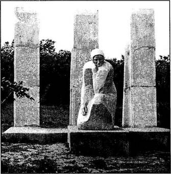

|
КНИГА СКОРБИ УКРАИНЫ
БЕРЕЗНЕГОВАТСКИЙ РАЙОН

пгт
Березнеговатое. Памятный знак на месте расстрела подпольщиков, 1944 г.
Площадь района - 1,3 тыс. кв. км.
Население — около 24 тыс. человек. 1 поселок городского типа и 45
сельских насе ленных пунктов объединены в 1 поселковый и 14 сельских со
ветов. Районный центр — пгт Березнеговатое. Наиболее круп ными
населенными пунктами района являются села: Висунск, Лепетиха, Малеевка,
Новоукраинка.
О состоянии района накануне Великой
Отечественной войны свидетельствуют такие факты.
Так, находящаяся в Березнеговатом
межрайонная больница располагала хирургическим, терапевтическим и родильным
отде лениями. Заканчивалось оборудование рентгеновского кабинета, пункта
переливания крови; были расширены сезонные солярии для больных
туберкулезом. Значительные изменения произошли в области образования и
культуры Березнеговатого. В начале 30-х годов неграмотность среди
взрослого населения была в основном ликвидирована. 700 детей обучались в
средней, двух семилетних и четырех начальных школах. В 1936 г. в селе
открылся клуб с библиотекой.
Наряду с развитым сельским
хозяйством работали промыш ленные артели, маслозавод.
В с.Висунск накануне войны
действовал фельдшерско-акушер ский пункт. В средней (открылась в 1937
г.), семилетней и на чальной школах насчитывалось 802 учащихся и 57
учителей. При сельском клубе работали драматический, танцевальный и музы кальный
кружки. Каждая школа, каждый колхоз имели свои библиотеки,
кинопередвижки. 90 процентов семей выписывали газеты и журналы.
В первые дни Великой Отечественной
войны началась мобили зация мужчин района в ряды Красной Армии. Около
девяти ты сяч жителей Березнеговатского района сражались на фронтах, в
подполье и партизанских отрядах. Многие из них не вернулись с войны - они
погибли в боях, умерли от ран, пропали без вести
Имена этих воинов вошли в тома
мемориального издания Книга Памяти Украины по Николаевской области.
Когда нависла угроза оккупации,
население стали эвакуиро вать. Сельскохозяйственная техника, скот, зерно
вывозились на восток. С первых дней войны на место ушедших в Красную Ар
мию стали женщины, старики, дети-школьники. Проявляя об разцы трудового
героизма, труженики колхозов и совхозов райо на своевременно убрали
урожай, приняли участие в эвакуации.
Березнеговатский район был
оккупирован во второй половине августа 1941 г. На землях района в этот
период сражались войска 18-й армии Южного фронта под командованием
генерал-лейте нанта А.К.Смирнова. Вырвавшись из окружения в междуречье
Ингула и Южного Буга, его войска, оказывая сопротивление про тивнику,
отступали к Днепру. 18 августа гитлеровцы оккупиро вали Березнеговатое и
прилегающие к нему села.
Захватчики устанавливали "новый
порядок" оружием и наси лием, отправляя молодежь на каторжные работы
в Германию. Для этой цели они объявляли через биржу труда мобилизацию,
делали облавы ночью на квартирах, днем на улицах. За годы ок купации тысячи
юношей и девушек района были угнаны в Герма нию.
Повсеместно вводился принудительный
малооплачиваемый труд.
Начались массовые аресты и расстрелы
мирного населения.
В конце августа 1941 г. в с.Висунск
фашисты расстреляли председателя колхоза Н. К.Стародубца и учителя
И.В.Плакуна., а в Березнеговатом - бригадира колхоза М.Г.Юрченко и
учителя О.И.Долину. В середине сентября было уничтожено 860 мирных
жителей села Нагартав и более 900 жителей с.Романовка.
О зверствах на территории района
свидетельствуют акты рас следования злодеяний немецко-фашистских
оккупантов. В одном из них, от 6 апреля 1944 г., говорится:
"Комиссия установила и
осмотрела могилы замученных и расстрелянных мирных граждан. Установлено
следующее: по Нагартавскому с/с расстреляно 762 человека еврейской нацио
нальности.
Две могилы замученных находятся в
западном направлении
приблизительно в 400-500 м от
райбольницы на месте высохше го ставка, третья могила находится южнее
первой могилы в 50 м, в овраге. Всего в 3-х могилах похоронено 662
человека. По словам очевидца, Каца Бориса, два трупа расстрелянных пасту
хов находятся вблизи от этих могил.
Две могилы находятся в 2-х смежных
оврагах, выходящих в балку, напротив колхоза "Волна революции"
со стороны Нагартава. В одной из балок находится 40 человек, а в другой —
60. По Березнеговатскому с/с расстреляно 111 человек. Из них 100 чело век
еврейской национальности. Остальные 11 — жители с. Березнеговатое (не
евреи) были расстреляны 16 марта 1944 г. Моги лы расстрелянных находятся
в северном направлении за с. Березнеговатое. 1-я могила (78 евреев) — в
400 м в северо-восточ ном направлении от сырзавода, 2-я (11 человек) —
1000 м северо-западнее сырзавода.
По словам очевидца, Рак Марии, за
с.Николаевка в разное время расстреляно 22 человека, 5 могил которых находятся
в 150-ти м вправо от дороги, ведущей в сторону с. Висунск.
Расстрел еврейского населения
начался 14 сентября 1941 г. в 7 часов утра. Людей раздевали до нижнего
белья и партиями по 20 человек подводили к оврагам и расстреливали. По
словам оче видца, Тыцкого Василия, некоторых детей палачи накалывали на
штык и через голову бросали в овраг. Других живьем забрасы вали трупами
расстрелянных. Учительница Станиславская Со фия провозгласила речь и была
убита прикладом винтовки. Одну несчастную жертву полицаи нашли раненой в
стороне от мес та расстрела, один полицай потянул ее за руки в овраг, а
второй выстрелом сзади убил ее. Несчастный отец, Щемонович Соло мон,
освободившийся каким-то образом от расстрела, просил оставить в живых его
маленькую дочку Нелю, но, невзирая на его просьбы, ее расстреляли. Тогда
отец попросил, чтобы его тоже расстреляли, что и было сделано. Со слов
очевидца Скриль П. М„ в феврале месяце 1942 г. с приближением весны
велись работы по засыпке более толстым слоем земли могил расстрелянных,
по тому что на поле расстрела трупы до того мелко засыпаны землей, что
были видны руки, ноги и даже головы. Для этой ра боты было мобилизовано
около 300 человек, жители сел Березнеговатое и Висунск. Работы длились
порядка 2-5 недель. Во избе жание попадания трупов в р. Висунъ во время
весеннего таяния снега в конце могил возводились каменные стены шириной
более метра и высотой до 3-4 м. На основании вышеуказанных дан ных и
составлен акт".
Оккупанты разрушили села,
культпросветные учреждения, хозяйственные постройки; разграбили все
колхозы, машинотракторные станции. На день освобождения район не имел
вообще крупного рогатого скота.
Для борьбы с врагом в Березнеговатом
и соседних селах Любомировка, Калуга, Лепетиха и других были созданы
подпольные группы, которые в январе 1943 г. были объединены в организа
цию. Ее возглавил Ф.Н.Кузьменко, работавший до войны заведу ющим
оргинструкторским отделом райкома КП(б)У. Основной за дачей подпольщики
считали установление связи с фронтом. С этой целью за линию фронта был
послан А.Я.Головко, который инфор мировал Украинский штаб партизанского
движения о существо вании в Березнеговатском районе подпольной
организации. Для установления связи и оказания помощи подпольщикам штаб
парти занского движения направил в Березнеговатое группу парашюти стов из
шести человек под командованием Ф.Г.Мысина.
Подпольщики вели антифашистскую
агитацию среди населе ния, организовывали саботаж мероприятий оккупантов.
6 марта 1944 г. накануне
освобождения района враги расстре ляли подпольщиков: А.Я.Головко,
М.Н.Седова, В.А.Слисаренко, А.Г.Терещенко, И.С.Стариенко, В.Ф.Корчаку,
Н.В.Рябенького, десантника И.В.Ефремцева, Ф.Н.Кузьменко и И.И.Яковенко
рас стреляли в январе 1944 г. в с.Краснолюбицкое Калининдорфского района
Херсонской области. После жестоких пыток фашисты вывезли в Снигиревку и в
начале марта 1944 г. расстреляли ко мандира десантников Ф.Г.Мысина и
радистку группы И.Р. Лауду.
Имена погибших участников
подпольно-партизанского движе ния вошли в Книгу Памяти Украины по Николаевской
области.
В марте* 1944 г. в результате
Березнеговато-Снигиревской опе рации, которая началась б марта,
развернулись бои по освобожде нию района. Войска 3-го Украинского фронта
под командованием генерала армии Р.Я.Малиновского взяли в полукольцо 6-ю
немецкую армию. Ценой больших потерь противнику удалось про рваться из
окружения на Запад через Южный Буг. В ходе операции было разгромлено
несколько дивизий врага, фашисты понес ли огромные потери. Территорию
района освобождали 39-я, 35-я, 82-я гвардейские стрелковые дивизии 8-й
гвардейской армии (ко мандующий генерал-полковник В.В.Чуйков); 195-я и
353-я стрелковые дивизии 46-й армии (командующий генерал-майор
В.В.Глаголев); 60-я, 61-я, 59-я гвардейские стрелковые дивизии 6-й армии
(командующий генерал-лейтенант И.Т.Шлемин); 50-я, 54-я, 108-я гвардейские
стрелковые дивизии 5-й ударной армии (командующий генерал-лейтенант
В.Д.Цветаев).
Имена воинов, погибших во время
освобождения района, вне сены в 5-й, 7-й и 8-й тома Книги Памяти Украины
по Николаев ской области. Имена воинов уроженцев и призывавшихся воен
ными комиссариатами района, погибших в боях, умерших от ран и без вести
пропавших в годы Великой Отечественной войны, - в основном вошли в 1-й,
3-й, 4-й, 6-й, 7-й и 8-й тома мемориального издания Книги Памяти Украины.
В первый том Книги Скорби вошли
имена мирных граждан района, безвинно погибших от рук фашистов.
А
АВЕНБУРГ Арон, с.Романовка.
Расстрелян 14.09.1941 г.
АВЕНБУРГ Бруха Нисоновна, 1878,
с.Нагартав.Расстреляна 14.09.1941 г. в с.Нагартав.
АВЕНБУРГ Буня Моисеевна, 1920(1922),
с.Нагартав.Расстреляна 14.09.1941 г. в с.Нагартав.
АВЕНБУРГ Дора (Двойра) Моисеевна,
1926, с.Нагартав.Расстреляна 14.09.1941 г. в с.Нагартав.
АВЕНБУРГ Любовь (Люся) Моисеевна,
1922 (1924), с.Нагартав.Расстреляна 14.09.1941 г. в с.Нагартав.
АВЕНБУРГ Моисей, 1897,
с.Нагартав.Расстрелян 14.09. 1941 г. в с.Нагартав.
АВЕНБУЕГ Раиса, с.Романовка.
Расстреляна с семьей из 4-х человек.
АВЕНБУРГ Рива, с.Романовка.
Расстреляна 14.09. 1941 г. с семьей из 2-х человек.
АВЕНБУРГ Роза, 1906,
с.Нагартав.Расстреляна.
АВЕНБУРГ Сима Бенционовна, 1898, пгт
Березнеговатое. Расстреляна.
АВЕНБУРГ Циля Бенционовна, 1895,
с.Нагартав.Расстреляна 14.09.1941 г. в с.Нагартав.
АВЕНБУРГ Яша, с.Романовка.
Расстрелян 14.09.1941 г.
АЙБИНДЕР (имя неизвестно),
с.Романовка. Расстрелян(а) 14.09.1941 г. с семьей из 3-х человек.
АЛЬТГАУЗ Борис (Ворох Моисеевич),
1896, с.Нагартав.Расстрелян 14.09.1941 г. с семьей из 5-ти человек.
АЛЬТГАУЗ Гилель Пинхусович, 1880,
с.Нагартав.Расстрелян в сент. 1941 г. в с.Нагартав.
АЛЬТГАУЗ Израиль Гилелевич, 1904,
с.Нагартав.Расстрелян.
АЛЬТГАУЗ Маня, 1927. Расстреляна в
1941 г.
АЛЬТГАУЗ Матвей (Мотя) Исаакович,
1917. Пропал без вести в 1944 г.
АЛЬТГАУЗ Моисей Иванович, 1907, пгт
Березнеговатое. Расстрелян.
АЛЬТГАУЗ Поля, 1912. Расстреляна в
1941 г. в с.Нагартав .
АЛЬТГАУЗ Сруль Гилелевич,1904.
Расстрелян в 1944 г.
АЛЬТГАУЗ Хая. Расстреляна.
АМБЕРГ Барух, пгт Березнеговатое.
Расстрелян 14.09.1941 г. с семьей из 4-х человек.
АМБУРГ Клава, пгт Березнеговатое.
Расстреляна 14.09. 1941 г. с семьей из 4-х человек.
АМДУР Дора, 1915,
с.Нагартав.Погибла.
АМДУР Мотя, 1910,
с.Нагартав.Расстрелян.
АМДУР Феня, 1909. Погибла в 1941 г.
АМДУР Хая, 1861, пгт Березнеговатое.
Расстреляна.
АМДУР Циля, пгт Березнеговатое.
Расстреляна 14.09. 1941 г. с семьей из 4-х человек.
АМДУР Шая, с.Нагартав.Погиб в
с.Нагартав.
АПРАСОВСКАЯ Рива Хаимовна, 1920,
с.Нагартав, колхозница. Расстреляна 14.09.1941 г. в с.Нагартав.
АПРАСОВСКАЯ Сарра, 1923, с.Нагартав.Задавлена
вражеским танком в г. Николаев.
АПРАСОВСКАЯ Феня, 1921,
с.Нагартав.Расстреляна 14.09. 1941 г. в с.Нагартав.
АПРАСОВСКАЯ Шейндл, 1870, с.Нагартав, колхозница.
Расстреляна 14.09.1941 г. в с.Нагартав.
АПРАСОВСКИЙ Арон Хаимович, 1888,
с.Нагартав, колхозник. Расстрелян 14.09.1941 г. в с.Нагартав.
АПРАСОВСКИЙ Зяма Хаимович.
Расстрелян.
АПРАСОВСКИЙ Исаак Хаимович, 1917,
с.Нагартав (ныне пгт Берзнеговатое). Задавлен вражеским танком в г.
Николаев.
АПРАСОВСКИЙ Меер-Арон Хаимович,
1896. Задавлен вражеским танком в г. Николаев.
АПРАСОВСКИЙ Нухем Хаимович, 1891,
с.Нагартав, колхозник. Расстрелян 14.09.1941 г. в с.Нагартав.
АПРАСОВСКИЙ Сема Хаимович, 1912.
Задавлен вражеским танком в г. Николаев.
АПРАСОВСКИЙ Хаим Аронович, 1866,
с.Нагартав, колхозник. Расстрелян 14.09.1941 г. в с.Нагартав.
АПРАСОВСКИЙ Янкель Хаимович, 1910.
Расстрелян.
АРИНОВИЧ Зиновий Захарович, 1902,
с.Нагартав.Расстрелян 14.09.1941 г. в с.Нагартав.
АРИНОВИЧ Зяма, пгт Березнеговатое.
Расстрелян 14.09. 1941 г.
АРОНОВ Муня, пгт Березнеговатое.
Расстрелян 14.09.1941 г. с семьей из 6-ти человек.
АРТЮШЕНКО Михаил Федорович, 1915.
Погиб.
АРТЮШЕНКО Николай Федорович, 1923.
Погиб.
Б
БАМЕНСКИЙ (БЕЛЕСКИЙ) Израиль,
с.Нагартав.Расстрелян 14.09.1941 г. с семьей из 5-ти человек.
БАРЕНДОРФ (БАРИНДОРФ) Иосиф, 1860,
пгт Березнеговатое. Расстрелян.
БАРЕНДОРФ (БАРИНДОРФ) Нисль Ильич,
1916, пгт Березнеговатое. Расстрелян.
БАСИГИН Юда, с.Романовка. Расстрелян
14.09.1941 г. с семьей из 2-х человек.
БАСЬКИН Абрам Иосифович, 1896, пгт
Березнеговатое, кузнец. Расстрелян 14.09. 1941 г.
БАСЬКИН Ицель Шмил.,1915, с.Нагартав.Расстрелян
в .Нагартав.
БАСЬКИН Шмилык, 1895,
с.Нагартав.Расстрелян в с.Нагартав.
БАСЬКИНА Лена Абрамовна, 1924,
с.Нагартав.Расстреляна 4.09.1941 г.
БАСЬКИНА Маня. Погибла.
БАСЬКИНА Песя,
с.Нагартав.Расстреляна.
БАСЬКИНА Поля Самуиловна, 1915,
с.Нагартав.Погибла.
БЕЗТРАВНИЙ Андрей Ст., 1912,
с.Калиновка, колхозник, к-з "Перемога". Расстрелян 08.02.1944
г.
БЕЛЕНЬКАЯ Роза, 1928,
с.Нагартав.Расстреляна в с.Нагартав.
БЕЛЕНЬКИЙ (имя неизвестно),
с.Романовка. Расстрелян 14.09.1941 г. с семьей из 4-х человек.
БЕЛИНСКАЯ (имя неизвестно), 1896,
с.Нагартав, портниха. Расстреляна в с.Нагартав.
БЕЛИНСКАЯ (имя неизвестно), 1920,
с.Нагартав, учитель. Расстреляна в с.Нагартав.
БЕЛИНСКАЯ Елизавета Марковна
(Мееровна), 1895, пгт Березнеговатое, учитель. Расстреляна 14.09.1941 г.
в с.Нагартав.
БЕЛИНСКАЯ Зина, 1923, с.Нагартав,
ученица. Замучена фашистами в с.Нагартав.
БЕРЕСТОВАЯ Дора Залмановна, 1915,
с.Нагартав.Расстреляна в с.Нагартав.
БЕРЕСТОВАЯ Елена Павловна
(Сауловна), 1934, с.Нагартав.Расстреляна в с.Нагартав.
БЕРЕСТОВОЙ Борис Павлович
(Саулович), 1931, с.Нагартав.Расстрелян в с.Нагартав.
БЕРХМАН Гитл Моисеевна, 1921,
с.Нагартав, колхозница. Расстреляна в с.Нагартав.
БЕРХМАН Маня Абрамовна, 1904,
с.Нагартав, колхозница. Расстреляна в с.Нагартав.
БЕРХМАН Моисей Ильич (Эйлик.), 1896,
с.Нагартав, колхозник. Расстрелян 14.09. 1941 г. в с.Нагартав.
БЕРХМАН Моисей Иосифович, 1903,
с.Нагартав, колхозник. Расстрелян 14.09.1941 г. в с.Нагартав.
БЕРХМАН Софья Моисеевна, 1924,
с.Нагартав, колхозница. Расстреляна в с.Нагартав.
БЕРХМАН Фира Моисеевна, 1921,
с.Нагартав, колхозница. Расстреляна в с.Нагартав.
БЕСНИКОВСКАЯ Кейле-Гейсе, 1849,
с.Нагартав.Расстреляна в с.Нагартав.
БЕЦЕР Залман Пинхусович (Петрович),
1880, с.Нагартав.Расстрелян 14.09.1941 г. в с.Нагартав.
БЕЦЕР Зельде, пгт Березнеговатое.
Расстреляна 14.09. 1941 г. с семьей из 2-х человек.
БЕЦЕР Ида Мееровна, 1925,
с.Нагартав.Растреляна 14.09.1941 г. с двумя детьми в с.Нагартав.
БЕЦЕР Меер Пинхусович, 1896 (1900),
с.Нагартав, колхозник. Расстрелян 14.09.1941 г. в с.Нагартав.
БЕЦЕР Наум, с.Нагартав.Расстрелян
14.09.1941 г. с семьей из 5-ти человек.
БЕЦЕР Роза Шлемовна,
с.Нагартав.Расстреляна 14.09.1941 г. в с.Нагартав.
БЕЦЕР Сима Львовна (Лейб.), 1910,
с.Нагартав.Расстреляна 14.09.1941 г. с двумя детьми в с.Нагартав.
БЕЦЕР Хаим, 1905, с.Нагартав,
заготовитель. Расстрелян 14.09. 1941 г. в с.Нагартав.
БЕЦЕР Хаим-Зала Иосифович, 1894.
Погиб.
БЕЦЕР Хася Моисеевна, 1903,
с.Нагартав.Расстреляна в 1943 г. в Краснодарском крае.
БЕЦЕР Хая-Туба Юдл., 1870,
с.Нагартав.Расстреляна 14.09. 1941 г.
БЕЦЕР Циля, с.Нагартав.Расстреляна с
двумя детьми.
БЕЦЕР Эстер Петровна (Пейсаховна),
с.Нагартав.Расстреляна 14.09.1941 г. с дочерью в с.Нагартав.
БИЛАГА (БЕЦЛАГА) Моисей,
с.Нагартав.Расстрелян 14.09. 1941 г. с семьей из 5-ти человек.
БЛЯХЕРОВ А.К., с.Романовка.
Расстрелян.
БЛЯХЕРОВ Б.К., с.Романовка.
Расстрелян.
БЛЯХЕРОВ Е.Б., с.Романовка.
Расстрелян.
БЛЯХЕРОВ К., с.Романовка.
Расстрелян.
БЛЯХЕРОВ Кошмир, с.Романовка.
Расстрелян 14.09.1941 г. с семьей из 4-х человек.
БЛЯХЕРОВ Н.П., с.Романовка.
Расстрелян.
БЛЯХЕРОВ П., с.Романовка.
Расстрелян.
БЛЯХЕРОВ Хаим, с.Романовка.
Расстрелян 14.09.1941 г. с семьей из 5-ти человек.
БОБРИК В., с.Романовка.
Расстрелян(а).
БОБРИК СМ., с.Романовка.
Расстрелян(а).
БОГУСЛАВСКАЯ Феня, пгт
Березнеговатое. Расстреляна 14.09.1941 г.
БОГУСЛАВСКАЯ Хая, 1868,
с.Нагартав.Расстреляна в с.Нагартав.
БОГУСЛАВСКИЙ Лев, 1878, пгт
Березнеговатое. Расстрелян.
БОЛДИН Иосиф Срулевич, с.Романовка.
Расстрелян 14.09. 1941 г. с семьей из 2-х человек.
БОЛЬШАН Бетя Иосифовна 1924,
с.Нагартав.Расстреляна в с. Нагартав.
БОЛЬШАН Дора Иосифовна, 1920,
с.Нагартав.Погибла.
БОЛЬШАН Иешая, 1901,с.Нагартав.Расстрелян в с.Нагартав.
БОЛЬШАН Илья Исаакович, 1924 (1926),
с.Нагартав.Расстрелян в с.Нагартав.
БОЛЬШАЯ Иосиф Менделевич, 1888,
с.Нагартав.Расстрелян в с.Нагартав.
БОЛЬШАН Любовь Исааковна, 1926, пгт
Березнеговатое. Расстреляна.
БОЛЬШАН Марик Иосифович,
с.Нагартав.Погиб.
БОЛЬШАН Сарра Яковлевна, 1903,
с.Нагартав.Расстреляна в с.Нагартав.
БОЛЬШАН Сима Менделевна, 1894
(1905), с.Нагартав.Расстреляна в с.Нагартав.
БОЛЬШАН Софья Менделевна, 1878
(1888), с.Нагартав.Расстреляна в с.Нагартав.
БОЛЬШАН Срул (Израиль),
с.Нагартав.Расстрелян 14.09. 1941 г. с семьей из 5-ти человек.
БРЕНДА Моисей, с.Романовка.
Расстрелян 14.09.1941 г. с семьей из 3-х человек.
БУЛАТ Ярина Нестеровна 52-х лет,
с.Висунск, домохозяйка. Расстреляна 20.03. 1944 г.
БУРЯК Владимир Захарович 13-ти лет,
пгт Березнеговатое. Подорвался на мине 22.07.1944 г.
БУТМАН Смопта, с.Романовка.
Расстрелян(а) 14.09. 1941 г. с семьей из 3-х человек.
В
ВАЛЬШТЕЙН (имя неизвестно),
с.Романовка. Расстрелян(а) с семьей из 6-ти человек.
ВАСКИН (ВОСКИН) Митель,
с.Нагартав.Расстрелян 14.09.1941 г. с семьей из 3-х человек.
ВЕДЕНКО Анатолий Григорьевич 9-ти
лет, с.Отрадное. Погиб 29.04.1945 г. от разрыва снаряда.
ВЕДЕНКО Тамара Григорьевна 7-ми лет,
с.Отрадное. Погибла 29.04.1945 г. от разрыва снаряда.
ВЕЛИЧКО Николай Иванович 16-ти лет,
пгт Березнеговатое. Подорвался на мине 08.08. 1944 г.
ВЕЛЬДШТЕЙН (имя неизвестно),
с.Романовна. Расстрелян(а).
ВЕЛЬДШТЕЙН (имя неизвестно),
с.Романовна. Расстрелян(а).
ВЕТРОГОН Сарра, 1885,
с.Нагартав.Расстреляна 14.09. 1941 г. в с.Нагартав.
ВЕТРОГОН Хаим Нисонович (Нусимович),
1887, с.Нагартав.Расстрелян 14.09.1941 г. в с.Нагартав.
ВЕТРОГОН Хая, пгт Березнеговатое.
Расстреляна 14.09. 1941 г. с семьей из 2-х человек.
ВИЛЬНЕР Самуил (Соломон) Аронович,
с. Романовна. Расстрелян 14.09.1941 г. с семьей из 4-х человек.
ВИЛЬЧУЕВСКИЙ Б.Я., с.Романовка.
Расстрелян.
ВИНИК (ВИННИК) Голда,
с.Нагартав.Расстреляна 14.09. 1941 г. с семьей из 2-х человек.
ВИНОВ (имя неизвестно),
с.Нагартав.Расстрелян с семьей из 5-ти человек.
ВИНОВ (имя неизвестно), с.Романовка.
Расстрелян 14.09. 1941 г.
ВИНОВ Беньямин, пгт Березнеговатое.
Расстрелян 14.09. 1941 г.
ВИНОВ Иекутил, с.Романовка.
Расстрелян 14.09.1941 г. с семьей из 3-х человек.
ВИНОВА Буня (Блюма), с.Романовка.
Расстреляна 14.09. 1941 г. с семьей из 3-х человек.
ВИНОВА Соня, с.Нагартав.Расстреляна
14.09.1941 г.
ВОРОБЬЕВ Эля, 1909, пгт
Березнеговатое, колхозник. Расстрелян в с.Нагартав.
ВОРОБЬЕВА Рахиль Элевна, 1936,
с.Нагартав, колхозница. Расстреляна в с.Нагартав.
ВОРОБЬЕВА Хая, 1913 (1918),
с.Нагартав, колхозница. Расстреляна с двумя детьми в с.Нагартав.
ВОСКИН Виктор Михайлович
(Нисонович), 1926, с.Нагартав.Расстрелян.
ВОСКИН И., с.Романовка. Расстрелян.
ВОСКИН М.И., с.Романовка.
Расстрелян.
ВОСКИН Наум, пгт Березнеговатое.
Расстрелян 14.09.1941 г. с семьей из 6-ти человек.
ВОСКИНА Любовь Михайловна
(Нисоновна), с.Нагартав.Расстреляна.
ВОСКИНА Людмила Шлоймовна
(Соломоновна), 1939, с.Нагартав.Расстреляна 14.09. 1941 г. в с.Нагартав.
ВОСКИНА Сарра Ц., 1895, пгт
Березнеговатое. Расстреляна.
ВОСКИНА Фира Михайловна, пгт
Березнеговатое. Расстреляна.
ВОСКИНА Циля Михайловна, 1920, пгт
Березнеговатое. Расстреляна.
ВОСКРЕСЕНКО Александра,
Новоочаковский с/с. Арестована гестапо. Пропала без вести.
ВОСЬКИН Витя Нисонович, 1926,
с.Нагартав.Расстрелян 14.09.1941 г. в с.Нагартав.
ВОСЬКИН Идел Давидович, 1880,
с.Нагартав, колхозник. Расстрелян 14.09.1941 г. в с.Нагартав.
ВОСЬКИН Мотя (Матвей Соломонович),
с.Нагартав.Расстрелян.
ВОСЬКИН Нисон (Несимха) Давидович,
1905, с.Нагартав, колхозник. Расстрелян 14.09.1941 г. в с.Нагартав.
ВОСЬКИН Шолом-Ице Идл., 1904,
с.Нагартав, колхозник. Расстрелян 14.09.1941 г. в с.Нагартав.
ВОСЬКИН Шулем Идл. (Соломон
Юрьевич), 1908, с.Нагартав, колхозник. Расстрелян 14.09.1941 г. в
с.Нагартав.
ВОСЬКИНА Гите, 1934, пгт
Березнеговатое. Расстреляна 14.09.1941 г. в с.Нагартав .
ВОСЬКИНА Люба Нисоновна, 1924,
с.Нагартав.Расстреляна 14.09.1941 г. в с.Нагартав.
ВОСЬКИНА Рива, пгт Березнеговатое.
Расстреляна.
ВОСЬКИНА Сарра Исааковна, 1891,
с.Нагартав, швея. Расстреляна 14.09.1941 г. в с.Нагартав.
ВОСЬКИНА Сарра, 1904, колхозница.
Расстреляна 14.09. 1941 г. в с.Нагартав.
ВОСЬКИНА Соня,
с.Нагартав.Расстреляна.
ВОСЬКИНА Фира (Эстер) Нисоновна,
1920, с.Нагартав.Расстреляна 14.09.1941 г. в с.Нагартав.
ВОСЬКИНА Хая, 1907, с.Нагартав,
колхозница. Расстреляна 14.09.1941 г. в с.Нагартав.
ВОСЬКИНА Циля Нисоновна, 1918,
с.Нагартав.Расстреляна 14.09.1941 г. в с.Нагартав.
Г
ГАВРИЛЕНКО Иван Степанович 11 -ти
лет, с.Отрадное. Погиб 29.04.1945 г. от разрыва снаряда.
ГАМБЕРГ (ГОМБЕРГ) Маня,
с.Нагартав.Расстреляна 14.09. 1941 г. с семьей из 5-ти человек.
ГАНДИН (ГИНДИН) Липа, с.Нагартав.Расстрелян
14.09. 1941 г. с семьей из 3-х человек.
ГЕЛЛЕР Яков, пгт Березнеговатое.
Расстрелян 14.09.1941 г.
ГЕЛЬФАНД Белла Шапсевна,
с.Нагартав.Расстреляна.
ГЕЛЬФАНД Нойма Шмулевна, 1908,
с.Нагартав.Расстреляна 14.09.1941 г.
ГЕЛЬФАНД Нюся Самуиловна, 1923, пгт
Березнеговатое. Расстреляна в с.Нагартав .
ГЕЛЬФАНД Пейса Давидовна, 1912,
с.Нагартав.Расстреляна в с.Нагартав.
ГЕЛЬФАНД Пейсах Йойл., 1892,
с.Нагартав.Расстрелян 14.09. 1941 г. в с.Нагартав.
ГЕЛЬФАНД Поля, с.Нагартав.Расстрелян
14.09.1941 г. с семьей из 3-х человек.
ГЕЛЬФАНД Рива Юделевна (Юрьевна),
1919, с.Нагартав.Расстреляна Ы.09.1941 г. с ребенком.
ГЕЛЬФАНД Роза Абрамовна, 1908, пгт
Березнеговатое. Расстреляна в с.Нагартав .
ГЕЛЬФАНД Самуил, 1890, с.Нагартав.
Погиб.
ГЕЛЬФАНД Фейга-Бася Ну-хемовна,
с.Нагартав.Расстреляна с 2-мя детьми.
ГЕЛЬФАНД Шапсе Самуилович, 1906,
с.Нагартав.Расстрелян.
ГЕЛЬФАНД Эмиль Шапсевич, 1928,
с.Нагартав.Расстрелян.
ГЕЛЬФОНД (ГЕЛЬФАНД) Перец,
с.Нагартав (ныне пгт Березнеговатое.) Расстрелян.
ГЕЛЬФОНД (ГЕЛЬФАНД) Шапиля,
с.Нагартав.Расстрелян(а) 14.09.1941 г. с семьей из 4-х человек.
ГЕНКИН Нахум, с.Романовка.
Расстрелян 14.09.1941 г. с семьей из 4-х человек.
ГЕСИН (имя неизвестно), 1912,
с.Нагартав.Расстрелян.
ГЕСИНА Бася, с.Нагартав.Расстреляна.
ГЕСИНА Добе, с.Нагартав.Расстреляна.
ГИДАЛЕВИЧ Давид Матусович, 1906
(1912), с.Нагартав, тракторист. Расстрелян в с.Нагартав.
ГИДАЛЕВИЧ Зяма Абрамович, пгт
Березнеговатое. Расстрелян.
ГИДАЛЕВИЧ Зяма Матусович, 1922.
Расстрелян.
ГИДАЛЕВИЧ Иона,
с.Нагартав.Расстрелян 14.09.1941 г. в с.Нагартав.
ГИДАЛЕВИЧ Леня Матусович, 1925,
с.Нагартав.Расстрелян в с.Нагартав.
ГИДАЛЕВИЧ Матус Иосифович, 1880,
с.Нагартав.Расстрелян 14.09.1941 г.в с.Нагартав.
ГИДАЛЕВИЧ Хаим, 1885. Погиб.
ГИДАЛЕВИЧ Хана Матусовна, 1912,
с.Нагартав.Погибла.
ГИДАЛЕВИЧ Циля Матусовна, 1914,
с.Нагартав.Погибла в эвакуации при бомбардировке в р-не г.Астрахань.
ГИДАЛЕВИЧ Ципа Моисеевна, 1885,
с.Нагартав.Расстреляна в с.Нагартав.
ГИМПЕЛЬ (имя неизвестно),
с.Нагартав.Расстрелян(а) в г. Снигиревка.
ГИМПЕЛЬ Абрам, 1929. Расстрелян.
ГИМПЕЛЬ Владимир,
с.Нагартав.Расстрелян.
ГИМПЕЛЬ Герш-Лейб Израилевич, 1904,
пгт Березнеговатое. Расстрелян.
ГИМПЕЛЬ Григорий Яковлевич
(Янкелевич), 1931, с.Нагартав.Расстрелян в с.Нагартав.
ГИМПЕЛЬ Дора, 1900, с.Нагартав (ныне
пгт Березнеговатое). Расстреляна с
двумя детьми в с.Нагартав.
ГИМПЕЛЬ Ефим Нисонович, 1930,
с.Нагартав.Расстрелян в с.Нагартав.
ГИМПЕЛЬ Лейб Шмулевич, 1880,
с.Нагартав.Погиб.
ГИМПЕЛЬ Леонид Яковлевич
(Янкелевич), 1936, с.Нагартав.Расстрелян в с.Нагартав.
ГИМПЕЛЬ Лея. Расстреляна.
ГИМПЕЛЬ Маня Нисоновна, 1895 (1900),
пгт Березнеговатое. Расстреляна.
ГИМПЕЛЬ Моисей, 1902,
с.Нагартав.Расстрелян 14.09. 1941 г. в с.Нагартав.
ГИМПЕЛЬ Мойша. Погиб.
ГИМПЕЛЬ Мордхе, пгт Березнеговатое.
Расстрелян 14.09. 1941 г. с семьей из 7-ми человек.
ГИМПЕЛЬ .Наум, пгт Березнеговатое.
Расстрелян 14.09. 1941 г. с семьей из 4-х человек.
ГИМПЕЛЬ Нося Яковлевич, 1895, пгт
Березнеговатое. Расстрелян.
ГИМПЕЛЬ Рива Лейбовна, пгт
Березнеговатое. Расстреляна 14.09.1941 г. с двумя детьми.
ГИМПЕЛЬ Роза Моисеевна, 1930,
с.Нагартав.Расстреляна в с.Нагартав.
ГИМПЕЛЬ Роза, 1906,
с.Нагартав.Погибла.
ГИМПЕЛЬ Розалия (Роза) Гершевна,
1906, с.Нагартав.Расстреляна в с.Нагартав.
ГИМПЕЛЬ Сарра, 1910, с.Нагартав,
колхозница. Расстреляна с ребенком в с.Нагартав.
ГИМПЕЛЬ Феня Абрамовна, 1903,
с.Нагартав.Расстреляна.
ГИМПЕЛЬ Хася (Хана) Моисеевна, 1932,
с.Нагартав.Расстреляна в с.Нагартав.
ГИМПЕЛЬ Циля. Расстреляна.
ГРАНИК Давид Абрамович, 1912,
с.Нагартав.Расстрелян в с.Нагартав.
ГРАНИК Давид Вольфович, 1910, с.Нагартав. Расстрелян в
с.Нагартав.
ГРАНИК Ида, 1914, с.Нагартав,
учительница. Расстреляна с двумя детьми.
ГРАНИК Лея (Лиза), 1885, с.Нагартав,
колхозница. Расстреляна в с.Нагартав.
ГРАНИК Эстер Абрамовна, 1910,
с.Нагартав.Погибла в с.Нагартав.
ГРАНИК Эстер Вольфовна, 1917,
с.Нагартав.Расстреляна в с.Нагартав.
ГРАНИК Этл Абрамовна (Вольфовна),
1916, с.Нагартав.Расстреляна в с.Нагартав.
ГРИНГАУЗ Берл Ирменович, 1886,
с.Нагартав, колхозник. Расстрелян в с.Нагартав.
ГРИНГАУЗ Борис Еремеевич
(Ирменович), 1901, с.Нагартав.Расстрелян 14.09.1941 г. в с.Нагартав.
ГРИНГАУЗ Владимир Еремеевич, 1912,
пгт Березнеговатое. Расстрелян.
ГРИНГАУЗ Маня, 1927. Расстрелян(а).
ГРИНГЕРМАН Лазарь, пгт
Березнеговатое. Расстрелян 14.09. 1941 г. с семьей из 5-ти человек.
ГУРЕВИЧ Арон Иосифович, 1912, пгт
Березнеговатое. Расстрелян.
ГУРЕВИЧ Дора Самуиловна (Шмиловна),
1914, с.Нагартав.Расстреляна в с.Нагартав.
ГУРЕВИЧ Зейда (Зейдель),
с.Романовка. Расстрелян 14.09. 1941 г. с семьей из б-ти человек.
ГУРЕВИЧ Мира Гилел., 1927,
с.Нагартав.Расстреляна в с.Нагартав.
ГУРЕВИЧ Рахиль, 1884,
с.Нагартав.Расстреляна в с.Нагартав.
ГУРЕВИЧ Роза, пгт Березнеговатое.
Расстреляна 14.09.1941 г.
ГУРЕВИЧ Софья, 1915, пгт
Березнеговатое. Расстреляна с тремя детьми в с.Нагартав .
ГУТМАН Смато, с.Романовка.
Расстрелян(а) с семьей из 3-х человек.
Д
ДАВИДЕНКО (имя неизвестно),
с.Костомаровка. Погиб(ла) от разрыва снаряда.
ДАШЕ ЛЬ (имя неизвестно),
с.Романовка. Расстрелян(а) 14.09. 1941 г. с семьей из 3-х человек.
ДЕМБУРГ Муниш, с.Романовка.
Расстрелян 14.09.1941 г. с семьей из 3-х человек.
ДЕМИДЕНКО Григорий Михайлович, 1922,
с.Калиновка, колхозник, к-з "Перемога". Расстрелян 08.02.1944
г.
ДИНЕВИЧ (имя неизвестно),
с.Нагартав.Расстрелян.
ДИНЕВИЧ (имя неизвестно),
с.Нагартав. Расстреляна.
ДИНЕВИЧ Ента Шмиловна (Семеновна),
с.Нагартав.Расстреляна.
ДИНЕВИЧ Зейде Шмер., 1875, пгт
Березнеговатое. Расстрелян.
ДИНЕВИЧ Израиль, 1875, с.Нагартав,
колхозник. Расстрелян с семьей из 3-х человек.
ДИНЕВИЧ Мейлех, 1908,
с.Нагартав.Расстрелян в г. Херсон.
ДИНЕВИЧ Ойзер Моисеевич, 1880,
с.Нагартав.Расстрелян 14.09. 1941 г. в с.Нагартав.
ДИНЕВИЧ Рейзе Юрьевна, 1880,
с.Нагартав.Расстреляна в с.Нагартав.
ДИНЕВИЧ Хана Хаимовна, 1896,
с.Нагартав.Расстреляна 14.09.1941 г.
ДИНЕВИЧ Шмил (Семен), с.Нагартав .
ДОБРОВЕЦКАЯ Хана, с.Романовка.
Расстреляна 14.09. 1941 г. с семьей из 3-х человек.
ДОБРОВЕЦКИЙ Е., с.Романовка.
Расстрелян.
ДОБРОВЕЦКИЙ Л.Е., с.Романовка.
Расстрелян.
ДОБРОТВОРСКИЙ Александр М., 1912,
с.Калиновка, колхозник, к-з "Перемога". Расстрелян 08.02.1944
г.
ДОВБНЯ Вера П., 1915. Погибла.
ДОЗОРЦЕВ Зяма Моисеевич, 1927,
с.Нагартав.Расстрелян в с.Нагартав.
ДОЗОРЦЕВ Ицик. Расстрелян.
ДОЗОРЦЕВ Марк Николаевич
(Нисонович), 1937 (1938), с.Нагартав.Расстрелян в с.Нагартав.
ДОЗОРЦЕВ Матус Моисеевич, 1922, пгт
Березнеговатое. Погиб.
ДОЗОРЦЕВ Моисей, 1935 (1936),
с.Нагартав.Расстрелян 14.09.1941 г.
ДОЗОРЦЕВ Мойша Залманович, 1885,
с.Нагартав, колхозник. Расстрелян в с.Нагартав.
ДОЗОРЦЕВА Дора Самуиловна
(Шмилевна), 1914, с.Нагартав.Расстреляна 14.09.1941 г. в с.Нагартав.
ДОЗОРЦЕВА Катя Моисеевна, 1930,
с.Нагартав.Расстреляна в с.Нагартав.
ДОЗОРЦЕВА Люба, 1928. Расстреляна.
ДОЗОРЦЕВА Сарра Моисеевна, 1913,
с.Нагартав.Расстреляна в с.Нагартав.
ДОЗОРЦЕВА Этл Хаимовна,1887,
с.Нагартав, колхозница. Расстреляна в с.Нагартав.
ДОНДА (ДОНДЕ) Григорий Давыдович,
с.Нагартав.Расстрелян 14.09.1941 г.
ДОНДА (ДОНДЕ) Хава, 1890,
с.Нагартав.Погибла.
ДОНДЕ Герш Давидович,1912,
с.Нагартав.Расстрелян в с.Нагартав.
ДОНДЕ Давид, 1860,
с.Нагартав.Расстрелян.
ДОНДЕ Израиль Давидович, 1880,
с.Нагартав.Расстрелян 14.09. 1941 г. в с.Нагартав.
ДОНДЕ Моня. Расстрелян в с.Нагартав
.
ДОНДЕ Шифра, 1903,
с.Нагартав.Расстреляна 14.09. 1941 г. в с.Нагартав.
ДРИБАН Берл, сапожник. Расстрелян с
семьей из 4-х человек.
ДРИЗ Моисей Юделевич, 1898,
с.Нагартав.Расстрелян 14.09.1941 г.
ДРИЗ Роза, с.Нагартав.Расстреляна
14.09.1941 г.
ДРИЗ Хая, 1920,
с.Нагартав.Расстреляна.
ДУБИНСКИЙ Г., с.Романовка.
Расстрелян.
ДУБИНСКИЙ И., с.Романовка.
Расстрелян.
ДУБОВЕНКО Александр Савич 11-ти лет,
с.Яковлевка, учащийся. Погиб 03.05.1944 г. от разрыва снаряда.
ДУХИН Абрам Евсеевич, 1927,
с.Нагартав.Расстрелян в с.Нагартав.
ДУХИН Арон, пгт Березнеговатое.
Расстрелян 14.09.1941 г. с семьей из 2-х человек.
ДУХИН Евсей (Ишие) Менделевич, 1895,
с.Нагартав, колхозник. Расстрелян 14.09.1941 г. в с.Нагартав.
ДУХИН Зяма Аронович, 1913, пгт
Березнеговатое. Расстрелян 14.09.1941 г. с семьей из 7-ми человек.
ДУХИН Хаим, 1880,
с.Нагартав.Расстрелян в с.Нагартав.
ДУХИНА Любовь Евсеевна, 1930, пгт
Березнеговатое. Расстреляна в с.Нагартав .
ДУХИНА Рахиль, 1904 (1910), пгт
Березнеговатое. Расстреляна с двумя детьми в с.Нагартав .
ДУХИНА Сарра Яковлевна (Янкелевна),
1897, с.Нагартав.Расстреляна в с.Нагартав.
ДУХИНА Феня Евсеевна, 1932, пгт
Березнеговатое. Расстреляна.
Е
ЕРЕМЕНКО Василий, с.Лепетиха,
колхозник. Погиб.
ЕРОПУКОВ Владимир Федорович 16-ти
лет, с.Малиевка. Погиб 18.05.1946 г. от разрыва мины.
ЕРУХИМОВИЧ Лейви Абелевич.
Расстрелян.
ЕРУХИНА Роза, с.Романовка.
Расстреляна 14.09.1941 г. с семьей из 7-ми человек.
ЕРУХУМОВИЧ (ЕРУХИМОВИЧ) (имя
неизвестно), 1880, пгт
Березнеговатое (с.Романовка). Расстреляна с двумя детьми.
ЕРУХУМОВИЧ (ЕРУХИМОВИЧ) Иосиф
Мордхевич, 1877, пгт Березнеговатое (с.Романовка). Расстрелян в пгт
Березнеговатое.
ЕРУХУМОВИЧ (ЕРУХИМОВИЧ) Левка,
с.Романовка. Расстрелян с семьей из 5-ти человек.
ЕРУХУМОВИЧ (ЕРУХИМОВИЧ) Сима,
с.Романовка. Расстрелян 14.09.1941 г. с семьей из 4-х человек.
ЕРУХУМОВИЧ (ЕРУХИМОВИЧ) Яков, 1900,
с.Романовка, бухгалтер. Расстрелян в пгт Березнеговатое.
Ж
ЖУРКОВСКАЯ Ида, 1937. Расстреляна в
1941 г. в г. Джанкой, Крым.
ЖУРКОВСКАЯ Лея Иосифовна, 1907,
с.Нагартав.Расстреляна в 1941 г. в г. Джанкой, Крым.
ЖУРКОВСКАЯ Маня, 1934. Расстреляна в
1941 г. в г. Джанкой, Крым.
ЖУРКОВСКИЙ Иосиф, 1907, с.Штендорф.
Расстрелян в 1941 г. в г. Джанкой, Крым.
З
ЗАИКИН Виктор Николаевич 12-ти лет,
с.Яковлевка, учащийся. Погиб 03.05.1944 г. от разрыва снаряда.
ЗАЯЦ Николай Николаевич 8-ми лет,
с.Отрадное. Погиб 29.04.1945 г. от разрыва снаряда.
ЗЕВЛЕВЕР Бася, с.Нагартав.Погибла.
ЗЕВЛЕВЕР Ида, 1910, с.Нагартав, колхозница.
Расстреляна с двумя детьми в с.Нагартав.
ЗЕВЛЕВЕР Исаак Исаакович, 1908,
с.Нагартав.Расстрелян 14.09. 1941 г. в с.Нагартав.
ЗЕВЛЕВЕР Лея, с.Нагартав.Погибла.
ЗЕВЛЕВЕР Рива, с.Нагартав.Погибла.
ЗЕВЛЕВЕР Шейндл. Погибла.
ЗИБЕЛЬМАН Шефтел (Тевел Натанович),
1898 (1902), с.Нагартав.Расстрелян 14.09.1941 г. с семьей из 4-х человек.
ЗИЛЬБЕРМАН Белла (Баяся) Тевелевна,
1938, с.Нагартав. Расстреляна 14.09.1941 г.
ЗИЛЬБЕРМАН Борис Натанович, 1902,
пгт Березнеговатое. Расстрелян 14.09.1941 г. с семьей из 7-ми человек.
ЗИЛЬБЕРМАН Сима Менделевна, 1905,
с.Нагартав. Расстреляна 14.09.1941 г.
ЗИЛЬБЕРМАН Тевье Натович
(Натанович), 1902, с.Нагартав.Расстрелян.
ЗИЛЬБЕРМАН Феня Тевьевна,
с.Нагартав.Расстреляна с сыном.
ЗИМОГЛЯД Свирид. Погиб.
ЗЯБКО Абрам Наумович, 1888,
с.Нагартав, колхозник. Расстрелян 14.09.1941 г. в с.Нагартав.
ЗЯБКО Бетя Абрамовна, 1919, с.Нагартав,
студентка. Расстреляна в с.Нагартав.
ЗЯБКО Виллий Матвеевич, 1924,
с.Нагартав. Расстрелян в с.Львово Херсонской обл.
ЗЯБКО Гена Пейсахович, 1927.
Расстрелян в с.Нагартав .
ЗЯБКО Даниил Беньяминович, 1890
(1896), с.Нагартав, колхозник. Расстрелян в г. Николаев.
ЗЯБКО Двойра, 1907, пгт
Березнеговатое. Расстреляна с дочерью в с.Нагартав .
ЗЯБКО Илья Шапс, 1928. Расстрелян в
с.Нагартав .
ЗЯБКО Мириам, 1890 (1896),
с.Нагартав, колхозница. Расстреляна в с.Нагартав.
ЗЯБКО Нина Матвеевна, 1924,
с.Нагартав. Расстреляна в с.Львово Херсонской обл.
ЗЯБКО Пейсах Беньяминович
(Вениаминович), 1912 (1915), пгт Березнеговатое, колхозник. Расстрелян в
с.Нагартав .
ЗЯБКО Сарра Гершевна (Григорьевна),
1890, пгт Березнеговатое. Расстреляна в с.Нагартав .
ЗЯБКО Сарра Матвеевна, 1922,
с.Нагартав. Расстреляна в с.Львово Херсонской обл.
ЗЯБКО Фейга, 1871,
с.Нагартав.Расстреляна 14.09.1941 г. с семьей из 2-х человек.
ЗЯБКО Шабса Беньяминович, 1892
(1898), с.Нагартав, колхозник. Расстрелян 14.09. 1941 г. в с.Нагартав.
ЗЯБКО Шатева, пгт Березнеговатое.
Расстреляна 14.09. 1941 г. с семьей из 3-х человек.
ЗЯБКО Эстер Борисовна, 1916,
с.Нагартав. Погибла.
ЗЯБКО Эстер Моисеевна, 1916 (1920),
с.Нагартав.Погибла.
И
ИВАЩЕНКО Константин Григорьевич,
1903, Калужский с/с. Расстрелян 01.10. 1942 г.
ИЛЯШЕВ Идель, с.Нагартав.Расстреляна
14.09.1941 г. с семьей из 3-х человек.
ИОФФЕ Малка, 1861,
с.Нагартав.Погибла.
ИОФФЕ Фроим, 1860, с.Нагартав.Погиб.
ИПАТОВ Владимир Максимович.
Расстрелян.
К
КАЗВЕН (имя неизвестно),
с.Романовка. Расстрелян(а).
КАЛИНИЧЕНКО В.О., 1903. Погиб.
КАЛЬМАН Ефим Меерович, 1938,
с.Нагартав.Расстрелян в с.Нагартав.
КАЛЬМАН Марат Меерович, 1935,
с.Нагартав.Расстрелян в с.Нагартав.
КАЛЬМАН Моня. Погиб.
КАЛЬМАН Рива Лейбовна, 1908,
с.Нагартав, колхозница. Расстреляна в с.Нагартав.
КАНТЕР И.С., с.Романовка.
Расстрелян(а).
КАНЦУРЕНКО Иван Федорович 15-ти лет,
с.Новоочаков, колхозник, к-з им. Ленина. Погиб 08.04.1946 г. от разрыва
снаряда.
КАПЛАН Абрам, пгт Березнеговатое.
Расстрелян 14.09. 1941 г. с семьей из 3-х человек.
КАПЛУН (КАПУЛЕР) Люба, 1898,
с.Нагартав.Расстреляна в с.Нагартав.
КАПЛУН (КАПУЛЕР) Люся Израилевна,
1928, с.Нагартав.Расстреляна в с.Нагартав.
КАПЛУН (КАПУЛЕР) Рая Израилевна,
1929, с.Нагартав, ученица. Расстреляна в с.Нагартав.
КАПЛУН (КАПУЛЕР) Шифра,
с.Нагартав.Расстреляна 14.09. 1941 г. в с.Нагартав.
КАПЛУН (КАУЛЕР) Мотя Израилевна,
1936, с.Нагартав.Расстреляна в с.Нагартав.
КАПУЛЕР Израиль Хлоймович, 1898,
с.Нагартав.Расстрелян в сент. 1941 г. в с.Нагартав.
КАПУЛЕР Люба, 1898, с.Нагартав.
Расстреляна в сент. 1941 г. в с.Нагартав.
КАПУЛЕР Мотл (Матвей) Израилевич,
1929, с.Нагартав.Расстрелян в сент. 1941 г. в с.Нагартав.
КАПУЛЕР Раиса Израилевна, 1926,
с.Нагартав.Расстреляна в сент. 1941 г. в пгт Березнеговатое.
КАПУЛЕР Шифра Израилевна, 1898,
с.Нагартав.Расстреляна в сент. 1941 г. в с.Нагартав.
КАРТ Абрам Бенционович, 1870,
с.Нагартав.Расстрелян 14.09.1941 г. в с.Нагартав.
КАРТ Берл (Борис), 1870,
с.Нагартав.Расстрелян в с.Нагартав.
КАРТ Борис Бенционович, 1883. Погиб.
КАРТ Брайна, 1911, с.Нагартав,
колхозница. Расстреляна с двумя детьми в с.Нагартав.
КАРТ Геня, 1875,
с.Нагартав.Расстреляна с дочерью.
КАЦОВ Григорий Яковлевич, 1913,
колхозник. Погиб.
КАЦОВ Иосиф. Погиб.
КАЦОВ Лейб, пгт Березнеговатое.
Расстрелян 14.09.1941 г. с семьей из 6-ти человек.
КАЦОВ Хаим, 1880, с.Нагартав,
колхозник. Расстрелян в с.Нагартав.
КАЦОВ Яков, 1887, пгт
Березнеговатое. Расстрелян в с.Нагартав .
КАЦОВ Янкель, 1878, пгт
Березнеговатое. Расстрелян 14.09.1941 г. с семьей из 3-х человек.
КАЦОВ Янкл. Погиб.
КАЦОВА Геся. Погибла.
КАЦОВА Ида Шименовна (Семеновна),
1915, с.Нагартав, служащая. Расстреляна в 1941 г. в г. Херсон.
КАЦОВА Минда, с.Нагартав.Расстреляна
с семьей из 6-ти человек.
КАЦОВА Феня Натановна, 1880,
с.Нагартав.Расстреляна.
КАЦОВА Феня, с.Нагартав.Погибла.
КАЦОВА Фрима, с.Нагартав.Расстреляна
с семьей из 2-х человек.
КИКНИС Соня, с.Нагартав, 1927.
Погибла.
КЛИМЕНКО Михаил. Погиб.
КЛЯЗЬ (КНЯЗЬ) (имя неизвестно),
с.Нагартав.Расстрелян(а) 14.09.1941 г.
КЛЯЗЬ (КНЯЗЬ) А.И., с.Романовка.
Расстрелян(а).
КЛЯЗЬ (КНЯЗЬ) И., с.Романовка.
Расстрелян(а).
КЛЯЗЬ (КНЯЗЬ) Любовь Иосифовна,
1910, с.Романовка. Расстреляна с семьей из 3-х человек в с.Нагартав .
КЛЯЩИЦКАЯ Алта Нахумовна, 1875, пгт
Березнеговатое, домохозяйка. Расстреляна 14.09.1941 г. в с.Нагартав .
КЛЯЩИЦКАЯ Ася Гершевна
(Григорьевна), 1927, с.Нагартав, студентка. Расстреляна 14.09.1941 г. в
с.Нагартав.
КЛЯЩИЦКАЯ Вера Шмееровна, 1925
(1927), с.Нагартав.Расстреляна 14.09.1941 г. в с.Нагартав.
КЛЯЩИЦКАЯ Гинда Шмееровна, 1923,
с.Нагартав, студентка. Расстреляна 14.09.1941 г. в с.Нагартав.
КЛЯЩИЦКАЯ Ида Ансельмовна, 1894,
с.Нагартав.Расстреляна 14.09.1941 г. в с.Нагартав.
КЛЯЩИЦКАЯ Сарра, 1895, пгт
Березнеговатое. Расстреляна 14.09.1941 г. в с.Нагартав .
КЛЯЩИЦКАЯ Шифра, пгт Березнеговатое.
Расстреляна с тремя детьми в с.Нагартав .
КЛЯЩИЦКАЯ Яна Гершевна,
с.Нагартав.Погибла.
КЛЯЩИЦКИЙ Барух (Борух),
с.Нагартав.Расстрелян в с.Нагартав.
КЛЯЩИЦКИЙ Герш-Рефул Лейбович, 1886
(1890), с.Нагартав, бригадир колхоза. Расстрелян 12.09.1941 г.
(14.09.1941 г.) в с.Нагартав.
КЛЯЩИЦКИЙ Лазарь,
с.Нагартав.Расстрелян 14.09.1941 г. с семьей из 3-х человек.
КЛЯЩИЦКИЙ Шлема, пгт Березнеговатое.
Расстрелян 14.09.1941 г. с семьей из 4-х человек.
КЛЯЩИЦКИЙ Шмерл Лейбович,
1893(1889), с.Нагартав, плотник. Расстрелян 14.09.1941 г. в с.Нагартав.
КЛЯЩИЦКИЙ Шмил Гершевич, 1925.
Погиб.
КЛЯЩИЦКИЙ Эмиль Гершевич, 1925
(1929), с.Нагартав.Расстрелян 14.09.1941 г. в с.Нагартав.
КНЯЗЬ Герц, с.Романовка. Расстрелян
14.09.1941 г. с семьей из 2-х человек.
КНЯЗЬ Ицик, с.Романовка. Расстрелян
с семьей из 2-х человек.
КОГАН Абрам, с.Романовка. Расстрелян
14.09.1941 г. с семьей из 3-х человек.
КОГАН Давид, пгт Березнеговатое.
Расстрелян 14.09.1941 г. с семьей из 2-х человек.
КОГАН Зейлик Иосифович,
с.Нагартав.Погиб.
КОГАН Ицль И. Погиб.
КОГАН Клара (Хая) Моисеевна, 1910,
с.Нагартав.Расстреляна 14.09.1941 г. с дочерью в с.Нагартав.
КОГАН Кунце, пгт Березнеговатое.
Расстреляна 14.09. 1941 г. с семьей из 2-х человек.
КОГАН Нюня И. Погиб.
КОЗМАН Бэба, с.Романовка.
Расстреляна 14.09.1941 г. с семьей из 3-х человек.
КОЗМАН Лея, с.Романовка. Расстреляна
14.09.1941 г. с семьей из 3-х человек.
КОЗЫРЬ Иосиф Иванович, 1904, пгт
березнеговатое. Погиб.
КОЙФМАН Люда Абрамовна, 1937.
Расстреляна в с.Калининдорф (ныне пгт Калининское Великоалександровского
р-на Херсонской обл.).
КОЙФМАН Мера Иосифовна, 1917,
с.Нагартав.Расстреляан в 1941 г. в с.Калининдорф (ныне пгт Калининское
Великоалександровского р-на Херсонской обл.).
КОЙФМАН Света Абрамовна, 1939,
с.Нагартав.Расстреляна в с.Калининдорф (ныне пгт Калининское
Великоалександровского р-на Херсонской обл.).
КОНТОР (КАНТОР) Роза, с.Романовка.
Расстреляна 14.09. 1941 г. с семьей из 2-х человек.
КОНТОР (КАНТОР) Сима, с.Романовка.
Расстреляна 14.09. 1941 г.
КОСАРЬ Дарья Федоровна,
Новоочаковский с/с. Арестована гестапо. Пропала без вести.
КОТКОВ (КАТКОВ) Исаак, пгт
Березнеговатое. Расстрелян 14.09.1941 г. с семьей из 5-ти человек.
КРИЧАК Давид Наумович, 1937,
с.Нагартав.Расстрелян 14.09.1941 г. в с.Нагартав.
КРУПКИН Алтер, с.Романовка.
Расстрелян 14.09.1941 г. с семьей из 4-х человек.
КРУПКИН Ицик (Исаак), с.Романовка.
Расстрелян с семьей из 2-х человек.
КРУТКИН Лейзер, с.Романовка.
Расстрелян 14.09.1941 г. с семьей из 4-х человек.
КУЗЬМЕНКО Анна. Погибла.
КУКЛИНСКИЙ (имя неизвестно),
с.Романовка. Расстрелян 14.09.1941 г. с семьей из 5-ти человек.
КУКЛИНСКИЙ (имя неизвестно),
с.Романовка. Расстрелян с семьей из 2-х человек.
КУКЛИНСКИЙ А., с.Романовка.
Расстрелян.
КУКЛИНСКИЙ А.С., с.Романовка.
Расстрелян.
КУКЛИНСКИЙ Б.С., с.Романовка.
Расстрелян.
КУКЛИНСКИЙ Герш, с.Романовка.
Расстрелян 14.09. 1941 г. с семьей из 4-х человек.
КУКЛИНСКИЙ М.С., с.Романовка.
Расстрелян.
КУКЛИНСКИЙ Н.Н. (И.), с.Романовка.
Расстрелян.
КУРГАНОВ Абрам, с.Нагартав.Погиб.
КУРГАНОВ Арон, 1884,
с.Нагартав.Погиб.
КУРГАНОВ Иоэл (Иосифов),
с.Нагартав.Погиб.
КУРГАНОВ Исаак, 1910, с.Нагартав, сапожник. Расстрелян
14.09.1941 г. с семьей из 4-х человек.
КУРГАНОВ Лев Абрамович,
с.Нагартав.Расстрелян 14.09.1941 г. с семьей из 3-х человек.
КУРГАНОВ Мойше-Лейзер (Моисей,),
с.Нагартав.Погиб.
КУРГАНОВ Семен, с.Нагартав.Погиб.
КУРГАНОВА Белла Гилелевна, 1904,
с.Нагартав.Расстреляна в сент. 1941 г.
КУРГАНОВА Дина, 1895,
с.Нагартав.Погибла.
КУРГАНОВА Зися Давидовна,
с.Нагартав.Расстреляна 14.09. 1941 г. в с.Нагартав.
КУРГАНОВА Клара, 1920,
с.Нагартав.Расстреляна 14.09. 1941 г.с двумя детьми в с.Нагартав.
КУРГАНОВА Люба Гилелевна, 1906,
с.Нагартав, колхозница. Расстреляна в сент. 1941 г.
КУРГАНОВА Полина Абрамовна, 1902,
с.Нагартав.Погибла.
КУРГАНОВА Поля, 1912,
с.Нагартав.Расстреляна в с.Нагартав.
КУРГАНОВА Сарра, 1922,
с.Нагартав.Расстреляна в с.Нагартав.
КУРГАНОВА Сура (Сарра),1880,
с.Нагартав.Расстреляна с двумя детьми в с.Нагартав.
Л
ЛАКУС (имя неизвестно). Погиб(ла).
ЛАКУС Белла Мееровна,1938. Расстреляна в с.Нагартав
.
ЛАКУС Борис
Абрамович,с.Нагартав.Расстрелян. (Умер в эвакуации).
ЛАКУС Гриша Меерович,1935.
Расстрелян в с.Нагартав .
ЛАКУС Екатерина, 1903, пгт Березнеговатое.
Расстреляна в с.Нагартав .
ЛАКУС Лиза, 1901,
с.Нагартав.Расстреляна 14.09.1941 г. с двумя детьми в с.Нагартав.
ЛАКУС Меер Моисеевич,1902,
с.Нагартав.Погиб.
ЛАКУС Михля, с.Нагартав.Погибла.
ЛАКУС Мойша (Моисей) Абрамович,
1870, с.Нагартав, колхозник. Расстрелян в сент. 1941 г. в с.Нагартав.
ЛАКУС Нейма, 1880, пгт
Березнеговатое, доярка. Расстреляна.
ЛАКУС Семен Моисеевич, 1899 (1906),
с.Нагартав.Расстрелян 14.09.1941 г. в с.Нагартав.
ЛАКУС Суре-Рива Семеновна, 1890,
с.Нагартав.Расстреляна в сент. 1941 г. в с.Нагартав .
ЛАКУС Хана Моисеевна, 1896 (1910),
с.Нагартав, колхозница. Расстреляна в с.Нагартав.
ЛАМДАН Соломон, с.Романовка.
Расстрелян 14.09.1941 г. с семьей из 5-ти человек.
ЛАМДИН Ю., с.Романовка. Расстрелян.
ЛАХИМОВА Мария, 1910, с.Калиновка,
колхозница, к-з "Перемога". Расстреляна 08.02. 1944 г.
ЛЕБЕДЬ Владимир Айзикович, 1935
(1938), с.Нагартав. Расстрелян.
ЛЕБЕДЬ Герш Ойзерович,
с.Нагартав.Расстрелян 14.09. 1941 г.
ЛЕБЕДЬ Дора Владимировна, 1912,
с.Нагартав.Расстреляна 14.09.1941 г. в с.Нагартав.
ЛЕБЕДЬ Евсей, с.Нагартав.Погиб.
ЛЕБЕДЬ Муся, 1912,
с.Нагартав.Расстреляна 14.09.1941 г.
ЛЕБЕДЬ Фроим, с.Нагартав.Расстрелян
14.09.1941 г.
ЛЕВИ Хана Абрамовна, 1910,
с.Нагартав .Расстреляна 14.09. 1941 г.
ЛЕВИНТОН Борис Давидович, 1906,
с.Нагартав, тракторист. Расстрелян 14.09.1941 г. в с.Нагартав.
ЛЕВИНТОН Давид Алтерович, 1880,
с.Нагартав, заготовитель. Расстрелян 14.09.1941 г. в с.Нагартав.
ЛЕВИНТОН Даша Юдловна (Юрьевна),
1885, с.Нагартав.Расстреляна 14.09.1941 г. в с.Нагартав.
ЛЕВИНТОН Мария Давидовна, 1904,
с.Нагартав.Расстреляна 14.09. 1941 г. в с.Нагартав.
ЛЕВИТ Б., с.Романовка.
Расстрелян(а).
ЛЕВИТ Б.М., с.Романовка.
Расстрелян(а).
ЛЕВИТ З.В., с.Романовка.
Расстрелян(а).
ЛЕВИТ И., с.Романовка.
Расстрелян(а).
ЛЕВИТ С.Ю., с.Романовка.
Расстрелян(а).
ЛЕВИТ Я., с.Романовка.
Расстрелян(а).
ЛЕВИТАН Борис, пгт Березнеговатое.
Расстрелян 14.09. 1941 г.
ЛЕВИТИН Давид, с.Нагартав.Расстрелян
с семьей из 4-х человек.
ЛЕЙБМАН Исаак, 1912,
с.Нагартав.Расстрелян в с.Нагартав.
ЛЕЙБМАН Натан Исаакович, 1936,
с.Нагартав.Расстрелян.
ЛЕЙБМАН Сарра, пгт Березнеговатое.
Расстреляна.
ЛЕЙБМАН Ц., пгт Березнеговатое.
Расстрелян(а).
ЛЕЙДЕРМАН Гедалья Яковлевич, 1900,
с.Нагартав.Расстрелян 14.09.1941 г. в с.Нагартав.
ЛЕЙДЕРМАН Иосиф Борухович,
1898, с.Нагартав, бухгалтер.
Расстрелян 14.09.1941 г. в с.Нагартав.
ЛЕЙДЕРМАН Песя, 1900,
с.Нагартав.Расстреляна 14.09. 1941 г. в с.Нагартав.
ЛЕЙДЕРМАН Рахиль Яковлевна, 1905,
с.Нагартав.Расстреляна 14.09.1941 г. в с.Нагартав.
ЛИВИТ Герш, с.Романовка. Расстрелян
14.09.1941 г. с семьей из 3-х человек.
ЛИКВЕРМАН Бетя Израилевна, 1920,
с.Нагартав.Погибла при бомбардировке.
ЛИКВЕРМАН Израиль, 1900, с.Нагартав,
аптекарь. Погиб при бомбардировке.
ЛИКВЕРМАН Сарра Израилевна, 1925,
с.Нагартав.Погибла при бомбардировке.
ЛИН (имя неизвестно),
с.Нагартав.Расстрелян(а) 14.09.1941 г.
ЛИН Генех Иосифович, 1898,
с.Нагартав.Расстрелян.
ЛИСЯНСКИЙ Анатолий Гаврилович,
с.Калуга. Умер 05.07. 1944 г. в результате осколочного ранения.
ЛОЗАК Менашем, с.Романовка.
Расстрелян(а) 14.09. 1941 г.
ЛОЗАК Мойша (Моисей), с.Романовка. Расстрелян
14.09. 1941 г. с семьей из 4-х человек.
ЛОЗОК (ЛОЗАК) Моня, с.Романовка.
Расстрелян 14.09.1941 г. с семьей из 3-х человек.
ЛОКЭР (имя неизвестно), с.Романовка.
Расстрелян(а).
ЛЯШЕНКО Николай Кл., 1910, с.Калиновка,
колхозник, к-з "Перемога". Расстрелян 08.02.1944 г.
М
МАЛЮИКА (имя неизвестно),
с.Романовка. Расстрелян(а) 14.09.1941 г. с семьей из 4-х человек.
МАРКУШЕВИЧ (имя неизвестно),
с.Нагартав.Расстрелян(а) 14.09.1941 г.
МАРКУШЕВИЧ Елена Давыдовна,
с.Нагартав.Расстреляна 14.09.1941 г.
МАРКУШЕВИЧ Израиль, с.Нагартав.Расстрелян 14.09.
1941 г.
МАРКУШЕВИЧ Мося,
с.Нагартав.Расстрелян 14.09. 1941 г.
МАРКУШЕВИЧ Сарра,
с.Нагартав.Расстреляна 14.09. 1941 г.
МАРЬЯШ (имя неизвестно),
с.Романовка. Расстрелян(а) 14.09.1941 г.
МАРЬЯШ (имя неизвестно),
с.Романовка. Расстрелян(а) 14.09.1941 г. с семьей из 3-х человек.
МАРЬЯШ (имя неизвестно),
с.Романовка. Расстрелян(а) 14.09.1941 г. с семьей из 4-х человек.
МАРЬЯШ (имя неизвестно),
с.Романовка. Расстрелян(а).
МАРЬЯШ (имя неизвестно), с.
Романовна. Расстрелян(а).
МАРЬЯШ А.Н., с.Романовка.
Расстрелян(а).
МАРЬЯШ Анна Юдовна, с.Романовка. Расстреляна
14.09. 1941 г.
МАРЬЯШ Бенцион Яковлевич,
с.Романовка. Расстрелян 14.09.1941 г.
МАРЬЯШ Геня Ансельмовна, 1882, пгт
Березнеговатое. Расстреляна в с.Нагартав .
МАРЬЯШ З.М., с.Романовка.
Расстрелян(а).
МАРЬЯШ М.Я., с.Романовка.
Расстрелян(а).
МАРЬЯШ Мейлех (Михель),
с.Нагартав.Расстрелян 14.09. 1941 г. с семьей из 3-х человек.
МАРЬЯШ Павел, с.Романовка.
Расстрелян с семьей из 2-х человек.
МАРЬЯШ Рувим, с.Романовка.
Расстрелян с семьей из 3-х человек.
МАРЬЯШ СМ., с.Романовка.
Расстрелян(а).
МАРЬЯШ С.Х., с.Романовка.
Расстрелян(а).
МАРЬЯШ Самуил Яковлевич,
с.Романовка. Расстрелян.
МАРЬЯШ X., с.Романовка.
Расстрелян(а).
МАРЬЯШ X., с.Романовка. Расстрелян.
МАРЬЯШ Ю.А., с.Романовка.
Расстрелян(а).
МАРЬЯШ Ю.М., с.Романовка.
Расстрелян(а).
МАРЬЯШ Я., с.Романовка.
Расстрелян(а).
МАХ ЛИН Ишей, с.Романовка.
Расстрелян 14.09.1941 г. с семьей из 5-ти человек.
МЕДОВАЯ Ольга Абрамовна, 1932,
с.Нагартав.Расстреляна в с.Нагартав.
МЕДОВАЯ Рива Залмановна, 1918,
с.Нагартав.Расстреляна в с.Нагартав.
МЕДОВЫЙ Борис Абрамович,1935,
с.Нагартав.Расстрелян в с.Нагартав.
МЕНЦЕРОВ (имя неизвестно),
с.Романовка. Расстрелян 14.09.1941 г. с семьей из 3-х человек.
МЕЦНЕР З.Л., с.Романовка.
Расстрелян(а).
МИКОЛИК Аким. Погиб.
МИХАЙЛОВИЧ (имя неизвестно), с.Нагартав.Расстреляна
в с.Нагартав.
МИХАЙЛОВИЧ Абба, 1880, с.Нагартав,
колхозник. Расстрелян в с.Нагартав.
МИЦНЕР (МЕЦНЕР) Янкель,с.Романовка.
Расстрелян 14.09. 1941 г. с семьей из 4-х человек.
МИЦНЕРОВ (имя неизвестно),
с.Романовка. Расстрелян.
МОЛИНСКИЙ В., с.Романовка.
Расстрелян.
МОЛИНСКИЙ Л., с.Романовка.
Расстрелян.
МОЛЮШКИН Соломон, с.Романовка.
Расстрелян 14.09.1941 г. с семьей из 4-х человек.
МОРОЗ Лука Д., 1911,
с.Нагартав.Погиб.
МОСКАЛЕВ Гаврила Н., 1910, с.Калиновка, колхозник, к-з
"Перемога". Расстрелян 08.02.1944 г.
МОСКАЛЕНКО Николай Васильевич 16-ти
лет, пгт Березнеговатое. Подорвался на мине 09.08.1944 г.
МОЦКИН Герш, с.Романовка. Расстрелян
14.09.1941 г. с семьей из 3-х человек.
МОЦКИН Григорий, с.Романовка.
Расстрелян 14.09.1941 г.
МОЦКИН Иосиф, с.Романовка.
Расстрелян 14.09.1941 г.
МОЦКИНА Двойра, с.Романовка.
Расстреляна 14.09.1941 г.
МУЦМАХЕР Арон Рахмилевич, 1868,
с.Нагартав.Расстрелян.
МУЦМАХЕР Бася, 1898, с.Нагартав,
домохозяйка. Расстреляна в с.Нагартав.
МУЦМАХЕР Двойра (Дора),
с.Нагартав.Расстреляна в сент. 1941 г. с семьей из 3-х человек.
МУЦМАХЕР Ида Моисеевна, 1897 (1909),
с.Нагартав.Расстреляна в с.Нагартав.
МУЦМАХЕР Израиль Моисеевич, 1914,
с.Нагартав.Расстрелян в с.Нагартав.
МУЦМАХЕР Иосиф Аронович, 1898,
с.Нагартав, колхозник. Расстрелян в с.Нагартав.
МУЦМАХЕР Исаак Борохович, 1900,
с.Нагартав.Расстрелян 14.09.1941 г. в с.Нагартав.
МУЦМАХЕР Исаак Моисеевич, 1940,
с.Нагартав.Расстрелян.
МУЦМАХЕР Лея Иделевна, 1891,
с.Нагартав, колхозница. Расстреляна 14.09.1941 г. в с.Нагартав.
МУЦМАХЕР Лея Иосифовна, 1870,
с.Нагартав, доярка. Расстреляна в с.Нагартав.
МУЦМАХЕР Лея, 1908 (1912),
с.Нагартав.Расстреляна в сент. 1941 г. в с.Нагартав.
МУЦМАХЕР Лиза,
с.Нагартав.Расстреляна с двумя сыновьями.
МУЦМАХЕР Рахиль Иосифовна, 1939,
с.Нагартав.Расстреляна в с.Нагартав.
МУЦМАХЕР Рива Исааковна, 1937,
с.Нагартав.Расстреляна.
МУЦМАХЕР Роза Боруховна, 1910,
с.Нагартав.Расстреляна с двумя детьми.
МУЦМАХЕР Сарра Исааковна, 1932,
с.Нагартав.Расстреляна.
МУЦМАХЕР Суре-Гитл Исааковна, 1876,
с.Нагартав, колхозница. Расстреляна в с.Нагартав.
МУЦМАХЕР Фейга Залмановна, 1861,
с.Нагартав, колхозница. Расстреляна в с.Нагартав.
МУЦМАХЕР Хаим Иосифович. 1933,
с.Нагартав.Расстрелян в с.Нагартав.
МУЦМАХЕР Циля, 1900,
с.Нагартав.Расстреляна в с.Нагартав.
Н
НАКОНЕЧНЫЙ Иван Леонтьевич, 1887,
с.Орианда (ныне с.Терновка). Расстрелян 29.01. 1943 г.
НЕЙШТАТ Р.З., с.Романовка.
Расстрелян(а).
НОС Дмитрий Илларионович,
с.Лепетиха, колхозник. Погиб.
НОС Параскея (Пелагея) Карповна,
с.Лепетиха, колхозница. Расстреляна в 1944 г.
О
ОКС (имя неизвестно),
с.Нагартав.Расстрелян.
ОКС Алтер, 1890, с.Нагартав,
работник фермы. Расстрелян 14.09.1941 г. в с.Нагартав.
ОКС Соня Алтеровна, 1917,
с.Нагартав.Расстреляна в с.Нагартав.
ОКС Шейне (Шейва), 1895,
с.Нагартав.Расстреляна в с.Нагартав.
ОЛИЛЬКИН Ицик (Исаак), с.Романовка.
Расстрелян с семьей из 4-х человек.
ОМЕЛЬКИН Герц (Герш), с.Романовка.
Расстрелян 14.09. 1941 г. с семьей из 4-х человек.
ОНИЩЕНКО Павел Терентьевич, 1898,
Любомировский с/с. Расстрелян 20.01.1944 г.
ОСИПОВ Анатолий Прохорович 14-ти
лет, с.Яковлевка, учащийся. Погиб 03.05.1944 г. от разрыва снаряда.
П
ПАЙКИН (имя неизвестно),
с.Романовка. Расстрелян 14.09. 1941 г. с семьей из 2-х человек.
ПАЙКИН Абрам Исакович,1926,
с.Романовка. Расстрелян.
ПАЙКИН Арон Львович,1923,
с.Романовка. Расстрелян.
ПАЙКИН Борис, пгт Березнеговатое.
Расстрелян 14.09. 1941 г. с семьей из 4-х человек.
ПАЙКИН Ефим Исакович,1920,
с.Романовка. Расстрелян.
ПАЙКИН Ефим Львович,1926,
с.Романовка. Расстрелян.
ПАЙКИН И.М., 1895, с.Романовка.
Расстрелян.
ПАЙКИН М.М., 1859, с.Романовка.
Расстрелян.
ПАЙКИН Наум Исаакович,1923,
с.Романовка. Расстрелян.
ПАЙКИН А Анна, с.Романовка.
Расстреляна 14.09. 1941 г. с семьей из 2-х человек.
ПАЙКИНА Мира Исааковна,1897,
с.Романовка. Расстреляна.
ПАЙКИНА Рива Абрамовна,1894,
с.Романовка. Расстреляна.
ПАЙКИНА Этл Ойзеровна,1917,
с.Нагартав.Расстреляна с семьей из 4-х человек в с.Нагартав.
ПАЛЬЧИК (имя неизвестно),
с.Романовна. Расстрелян(а) 14.09.1941 г. с семьей из 2-х человек.
ПАЛЬЧИК А.П., с.Романовка.
Расстрелян(а).
ПАЛЬЧИК П., с.Романовка.
Расстрелян(а).
ПАЛЬЧИК СП., с.Романовка.
Расстрелян(а).
ПАТАШ (ПОТАШ) Бетя,
с.Нагартав.Расстреляна 14.09. 1941 г.
ПЕРЛОВ Яков Львович,
с.Нагартав.Расстрелян 14.09. 1941 г.
ПЕРЛОВА Дина
Львовна,с.Нагартав.Расстреляна 14.09. 1941 г.
ПЕРЛОВА Мария Залмановна, с.Нагартав
(ныне пгт Берез-неговатое). Расстреляна 14.09. 1941 г.
ПЕРЛОВА Рая Львовна,
с.Нагартав.Расстреляна 14.09. 1941 г.
ПЕРЛОВА Роза, с.Нагартав.Расстреляна
14.09.1941 г.
ПЕРЛОВА Фира Львовна, 1920,
с.Нагартав.Расстреляна 14.09.1941 г.
ПИЗНЯКОВ Герш, с.Романовка.
Расстрелян 14.09. 1941 г. с семьей из 4-х человек.
ПИЛЬМЕЙСТЕР Б.Л., с.Романовка.
Расстрелян(а).
ПИЛЬМЕЙСТЕР Б.М., с.Романовка.
Расстрелян(а).
ПИЛЬМЕЙСТЕР И.М., с.Романовка.
Расстрелян(а).
ПИЛЬМЕЙСТЕР СМ., с.Романовка.
Расстрелян(а).
ПЛИЦ Абрам Давидович, 1927,
с.Нагартав, колхозник. Расстрелян в с.Нагартав.
ПЛИЦ Виля (Циля) Абрамовна, 1910,
с.Нагартав.Расстреляна в с.Нагартав.
ПЛИЦ Двойра, 1912,
с.Нагартав.Расстреляна в с.Нагартав.
ПЛИЦ Зяма Бенционович (Давидович),
1866 (1878), с.Нагартав.Расстрелян.
ПЛИЦ Клара Моисеевна, 1926,
с.Нагартав.Расстреляна.
ПЛИЦ Малке Абрамовна, 1877,
с.Нагартав.Расстрелян в с.Нагартав.
ПЛИЦ Моисей Залманович, 1912,
с.Нагартав.Расстрелян.
ПЛИЦ Рахиль Абрамовна,1914,
с.Нагартав.Расстреляна.
ПЛИЦ Роза Абрамовна, 1901,
с.Нагартав, портниха. Расстреляна в с.Нагартав.
ПЛИЦ Соня Моисеевна, 1930,
с.Нагартав.Расстреляна.
ПЛИЦ Софья Яковлевна, 1934,
с.Нагартав.Расстреляна.
ПЛИЦ Циля Абрамовна, 1917,
с.Нагартав.Расстреляна.
ПОЛОШКИН Муниш, с.Романовка.
Расстрелян 14.09. 1941 г. с семьей из 2-х человек.
ПОЛОШКИНА Фрейда, с.Романовка.
Расстреляна 14.09. 1941 г.
ПОЛЯКОВ Абрам, 1897, с.Нагартав,
шорник. Расстрелян 14.09.1941 г. в с.Нагартав.
ПОЛЯКОВ Моисей Абрамович. 1929,
с.Нагартав.Расстрелян в с.Нагартав.
ПОЛЯКОВ Моня Абрамович, 1926,
с.Нагартав.Расстрелян в с.Нагартав.
ПОЛЯКОВА Вихна Янкелевна, 1898
(1900), с.Нагартав.Расстреляна в с.Нагартав.
ПОТАШ (имя неизвестно),
с.Нагартав.Расстреляна в сент. 1941 г.
ПОТАШ Мендель Зорахович, с.Нагартав,
лавочник. Расстрелян в сент. 1941 г.
ПОТАШ Семен, с.Нагартав.Расстрелян.
ПРАГ Лева Мойшевич, 1890,
с.Нагартав, продавец потребкооперации. Расстрелян 14.09.1941 г.
ПРАГ Лева Шмулевич, 1890,
с.Нагартав, председатель колхоза. Расстрелян.
ПРАГ Рива Хаимовна, с.Нагартав.Расстреляна.
ПРАГ Роза, 1894,
с.Нагартав.Расстреляна.
ПРАГ Соня, 1912,
с.Нагартав.Расстреляна.
ПРАГ Хаим Мойшевич, 1888,
с.Нагартав.Расстрелян.
ПРОХОРЕНКО Григорий Ильич 14-ти лет,
с.Белоусово. Умер 30.11.1944 г. в результате огнестрельного ранения.
ПТАШКИН (имя неизвестно),
с.Романовка. Расстрелян 14.09.1941 г. с семьей из 3-х человек.
ПТАШКИН Азриел, с.Романовка.
Расстрелян 14.09.1941 г. с семьей из 5-ти человек.
ПТАШКИН Буня (Блюма), с.Романовка.
Расстрелян 14.09. 1941 г. с семьей из 5-ти человек.
ПТАШКИН Зейлик Аронович,
с.Романовка. Расстрелян 14.09.1941 г.
ПТАШКИН Мендель, с.Романовка.
Расстрелян 14.09. 1941 г. с семьей из 4-х человек.
ПТАШКИН Моня (Михаил), с.Романовка.
Расстрелян с семьей из 2-х человек.
ПТАШКИН Хаим, с.Романовка. Расстрелян
14.09.1941 г. с семьей из 2-х человек.
ПТАШКИН Я.Б., с.Романовка.
Расстрелян.
ПТАШКИНА Ента Яковлевна,
с.Романовка. Расстреляна 14.09.1941 г.
ПТАШКИНА Фрейда, с.Романовка.
Расстреляна.
ПУЛЬСОН Абрам, 1885, пгт
Березнеговатое. Расстрелян в с.Нагартав.
ПУЛЬСОН Гилель Абрамович, 1886,
с.Нагартав.Расстрелян в сент. 1941 г. в с.Нагартав.
ПУЛЬСОН Дора Ошеровна, 1888,
с.Нагартав.Погибла.
ПУЛЬСОН Семен,
с.Нагартав.Расстрелян.
ПУЛЬСОН Соломон Яковлевич, 1924,
с.Нагартав, студент техникума. Расстрелян в с.Нагартав.
ПУЛЬСОН Хана Моисеевна, 1898 (1900),
с.Нагартав, колхозница. Расстреляна в с.Нагартав.
ПУЛЬСОН Циля, 1890,
с.Нагартав.Расстреляна в с.Нагартав.
ПУЛЬСОН Шая Борухович, 1896 (1900),
с.Нагартав.Расстрелян в с.Нагартав.
ПУЛЬСОН Шейндл Боруховна
(Харитоновна), 1891 (1898), с.Нагартав.Расстреляна в с.Нагартав.
ПУЛЬСОН Шлойме Борухович, 1898,
с.Нагартав.Расстрелян с семьей из 4-х человек в с.Нагартав.
ПУЛЬСОН Янке-Фицрек, 1896, с.Нагартав,
колхозник. Расстрелян 14.09.1941 г.
ПУШНИЦ Кися, с.Нагартав.Расстреляна
14.09.1941 г. с семьей из 4-х человек.
ПУШНИЦ Нисн Самойлович, 1914,
с.Нагартав, тракторист. Расстрелян в с.Нагартав.
ПУШНИЦ Фейга, 1918, с.Нагартав,
медсестра. Расстреляна в с.Нагартав.
ПУШНИЦ Феня (Фаня) Ниселевна, 1936,
с.Нагартав.Расстреляна в сент. 1941 г.
Р
РАБОТНИКОВ Лев Тевелевич, 1890,
с.Нагартав.Расстрелян в сент. 1941 г. в с.Нагартав.
РАБОТНИКОВ Лейб, 1890, с.Нагартав,
колхозник. Расстрелян 14.09.1941 г. в с.Нагартав.
РАБОТНИКОВА Адель Менделевна, 1893,
с.Нагартав.Расстреляна 14.09.1941 г. в с.Нагартав.
РАБОТНИКОВА Лея (Елизавета) Лейбовна
(Львовна), 1923, с.Нагартав, колхозница. Расстреляна 14.09.1941 г. в
с.Нагартав.
РАБОТНИКОВА Любовь Лейбовна
(Львовна), 1928, с.Нагартав, колхозница. Расстреляна 14.09. 1941 г. в
с.Нагартав.
РАБОТНИКОВА Ресл (Роза) Менделеевна,
1892, с.Нагартав, колхозница. Расстреляна 14.09. 1941 г. в с.Нагартав.
РИВКИН Зяма, с.Романовка. Расстрелян
14.09.1941 г. с семьей из 3-х человек.
РИГЕР Наум (Нухем), 1921,
с.Нагартав.Погиб.
РИСМАН Моисей Яковлевич, 1902,
с.Нагартав.Погиб.
РИСМАН Яков, 1878, с.Нагартав,
портной. Погиб.
РИТОВ Евсей, с.Нагартав.Расстрелян
14.09.1941 г. с семьей из 5-ти человек.
РИТОВ Иший, с.Романовка. Расстрелян
14.09.1941 г. с семьей из 3-х человек.
РИТОВА Хава, с.Нагартав.Расстреляна
с двумя детьми в с.Нагартав.
РОХЛИН Б.Д., с.Романовка.
Расстрелян.
РОХЛИН Н.Д., с.Романовка.
Расстрелян.
РУБИН Мендр (Мендель), 1906,
с.Нагартав.Погиб.
РУБИН Сура, 1908,
с.Нагартав.Погибла.
РУСКОЛ Доба Иосифовна, 1909,
с.Нагартав, колхозница. Расстреляна 14.09.1941 г. в с.Нагартав.
РУСКОЛ Иешая Хаимович, 1902,
с.Нагартав.Погиб.
РУСКОЛ Крейндл (Крейна) Иосифовна,
1890 (1905), с.Нагартав, колхозница. Расстреляна в с.Нагартав.
РУСКОЛ Маня Мееровна, 1928,
колхозница. Расстреляна в с.Нагартав.
РУСКОЛ Моисей, 1868,
с.Нагартав.Погиб.
РУСКОЛ Нехама Давидовна, 1850
(1870), с.Нагартав, колхозница. Расстреляна в с.Нагартав.
РУСКОЛ Сема Меерович, 1928, с.Нагартав,
колхозник. Расстрелян в с.Нагартав.
РУСКОЛ Фрида Мееровна, 1879,
с.Нагартав, колхозница. Расстреляна в с.Нагартав.
РУСКОЛ Хаим Шапсович, 1875,
с.Нагартав, сапожник. Расстрелян 14.09.1941 г. в с.Нагартав.
РУСКОЛ Хаим-Ице Иосифович, 1888,
с.Нагартав, колхозник. Расстрелян в с.Нагартав.
РУСКОЛ Хая, 1905,
с.Нагартав.Расстреляна в с.Нагартав.
РУСКОЛ Циля, с.Нагартав.Расстреляна
14.09.1941 г. с двумя детьми.
РУСКОЛ Шабса Хаимович, 1906,
с.Нагартав.Погиб.
РЯБИНОВИЧ (РАБИНОВИЧ) Л.Е., 1898,
с.Романовка. Расстрелян(а).
РЯБУШКИН И.И., с.Романовка.
Расстрелян.
С
САМОЙЛОВ Иешая Беркович, 1866,
с.Нагартав.Погиб в с.Нагартав.
САМОЙЛОВА Гита Наумовна. 1864,
с.Нагартав.Погибла в с.Нагартав.
САМСОВИЧ Вова Семенович, 1932,
с.Нагартав.Расстрелян в с.Нагартав.
САМСОВИЧ Неля Семеновна, 1930
(1936), с.Нагартав.Погибла.
САМСОВИЧ Семен, 1885, с.Нагартав,
механик. Погиб в с.Нагартав.
САМСОВИЧ Феня, 1885,
с.Нагартав.Расстреляна в с.Нагартав.
САПКО Павел. Погиб.
СВЕРДЛОВ (имя неизвестно), 1900,
с.Нагартав, колхозник. Расстрелян в с.Нагартав.
СВЕРДЛОВ Абрам Гершевич, 1908,
с.Нагартав, колхозник. Расстрелян 14.09.1941 г. в с.Нагартав.
СВЕРДЛОВ Абрам Давидович, 1911,
с.Нагартав, колхозник. Расстрелян в с.Нагартав.
СВЕРДЛОВ Авраам Эле-Хаим (Ильич),
1907, с.Нагартав, колхозник. Расстрелян в с.Калининдорф.
СВЕРДЛОВ Герш, 1868,
с.Нагартав.Расстрелян в с.Нагартав.
СВЕРДЛОВ Григорий (Герш) Давидович,
1920, с.Нагартав, колхозник. Расстрелян в с.Нагартав.
СВЕРДЛОВ Давид, 1878, с.Нагартав,
колхозник. Расстрелян 14.09.1941 г. в с.Нагартав.
СВЕРДЛОВ Зиновий, 1908,
с.Нагартав.Расстрелян в с.Нагартав.
СВЕРДЛОВ Тевье (Тевел) Эле-Хаимович
(Ильич), 1905, с.Нагартав, колхозник. Расстрелян в с. Калининдорф.
СВЕРДЛОВ Хаим, 1870, с.Нагартав,
колхозник. Расстрелян в с.Нагартав.
СВЕРДЛОВ Хуне Алтарович, 1866,
с.Нагартав, колхозник. Расстрелян в с.Нагартав.
СВЕРДЛОВ Эле-Хаим, 1863, с.Нагартав,
колхозник. Расстрелян в с.Нагартав.
СВЕРДЛОВ Яков (Янкель) Эльев.
(Ильич), 1870, с.Нагартав.Расстрелян.
СВЕРДЛОВА (имя неизвестно),
с.Нагартав.Расстреляна 14.09. 1941 г. в с.Нагартав.
СВЕРДЛОВА (имя неизвестно),
с.Нагартав.Расстреляна в сент. 1941 г. в с.Нагартав.
СВЕРДЛОВА Двойра, 1923, колхозница,
с.Нагартав.Расстреляна в с.Нагартав.
СВЕРДЛОВА Ида, 1910,
с.Нагартав.Расстреляна.
СВЕРДЛОВА Люба, 1908, с.Нагартав,
колхозница. Расстреляна в с.Нагартав.
СВЕРДЛОВА Мина Тевелевна, 1930,
с.Нагартав, колхозница. Расстреляна.
СВЕРДЛОВА Мира Хацкелевна, 1925
(1930), с.Нагартав.Погибла.
СВЕРДЛОВА Рахиль Тевелевна, 1927,
с.Нагартав.Расстреляна в с.Нагартав.
СВЕРДЛОВА Рива, 1914, с.Нагартав,
колхозница. Расстреляна в с.Нагартав.
СВЕРДЛОВА Роза,
с.Нагартав.Расстреляна.
СВЕРДЛОВА Соня, 1910, с.Нагартав,
колхозница. Расстреляна с двумя детьми в с.Нагартав.
СВЕРДЛОВА Сура,
с.Нагартав.Расстреляна в сент. 1941 г. в с.Нагартав.
СВЕРДЛОВА Тайбл, 1870, с.Нагартав,
колхозница. Расстреляна с сыном.
СВЕРДЛОВА Феня, 1902, с.Нагартав,
колхозница. Расстреляна в с.Нагартав.
СВЕРДЛОВА Циля, 1908,
с.Нагартав.Расстреляна с тремя детьми.
СЕРЕБРО Геня Менделевна, 1936,
с.Нагартав.Расстреляна в с.Нагартав.
СЕРЕБРО Мендр (Мендель), 1906,
с.Нагартав, колхозник. Расстрелян в с.Нагартав.
СЕРЕБРО Рива Юдовна, 1919,
с.Нагартав.Расстреляна в с.Нагартав.
СЕРЕБРО Шейндл Давидовна, 1912,
с.Нагартав, колхозница. Расстреляна в с.Нагартав.
СЕРЕБРО Юда (Юрий) Менделевич, 1930,
с.Нагартав.Расстрелян в с.Нагартав.
СИДЕНКО Борис Иванович, с.Лепетиха
(с-з "Реконструкция"). Погиб при бомбардировке.
СИДОРЕНКО Демид Емельянович 31-го
года, с.Белая Криница, комбайнер к-за им. Чкалова. Подоровался на мине
06.06.1944 г.
СКОКОЛ Азриель Янкелевич, 1910
(1912), с.Нагартав. Расстрелян в с.Нагартав.
СЛИНИН Мозес, с.Нагартав.Расстрелян.
СЛИНИН Моисей, 1902, с.Нагартав,
бухгалтер. Расстрелян.
СЛИНИН Хаим, 1880,
с.Нагартав.Расстрелян.
СЛИНИНА (имя неизвестно), 1882,
с.Нагартав.Расстреляна.
СЛИНИНА Хая, 1890, с.Нагартав,
учительница. Расстреляна в пгт Березнеговатое.
СЛИСАРЕНКО Иван Иванович, 1906, пгт
Березнеговатое. Погиб.
СМОТКИН Бер (Борис), с.Романовка.
Расстрелян 14.09.1941 г. г. семьей из 4-х человек.
СМОТКИН В., с.Романовка. Расстрелян.
СМОТКИН Мендель, с. Романовка.
Расстрелян 14.09.1941 г. с семьей из 2-х человек.
СМОТКИН Мотя, с.Романовка.
Расстрелян 14.09.1941 г. с семьей из 4-х человек.
СМОТКИН С, с.Романовка. Расстрелян.
СМОТКИН Я.С., с.Романовка.
Расстрелян.
СМОТКИНА Соня, с. Романовка.
Расстреляна 14.09.1941 г. с семьей из 3-х человек.
СОЙМЕРШАФТ Феня, 1902,
с.Нагартав.Расстреляна.
СОКОЛ Геня, с.Нагартав.Расстрелян(а).
СОКОЛ Дан(а) Идлович (Идловна),
1928, с.Нагартав.Расстреляла) в с.Нагартав.
СОКОЛ Евгения Львовна, 1924,
с.Нагартав.Расстреляна в с.Нагартав.
СОКОЛ Идл Абрамович, 1889, с.Нагартав,
продавец. Расстрелян в с.Нагартав.
СОКОЛ Моисей, пгт Березнеговатое.
Расстрелян 14.09.1941 г. с семьей из 5-ти человек.
СОКОЛ Муся Лейбовна, 1926,
с.Нагартав.Расстреляна в с.Нагартав.
СОКОЛ Ойзер Идлович, 1929,
с.Нагартав.Расстрелян в с.Нагартав.
СОКОЛ Рива, пгт Березнеговатое.
Расстреляна.
СОКОЛ Соня (Женя) Лейбовна,
1924, с.Нагартав.Расстреляна в
с.Нагартав.
СОКОЛ Соня Гершевна, 1917,
с.Нагартав, колхозница. Расстреляна в с.Нагартав.
СОКОЛ Тайбл, 1900, с.Нагартав,
колхозница. Расстреляна 14.09. 1941 г. с семьей из 3-х человек.
СОКОЛ Чарна, с.Нагартав.Расстреляна.
СОКОЛ Этл Хаимовна, 1899,
с.Нагартав.Расстреляна в с.Нагартав.
СОКОЛ Янкель, 1870,
с.Нагартав.Расстрелян 14.09.1941 г. с семьей из 2-х человек.
СОЛОВЕЙ (имя неизвестно),
с.Романовка. Расстрелян(а).
СОЛОВЕЙ Брайна, 1919,с.Нагартав, колхозница.
Расстреляна в с.Нагартав.
СОЛОВЕЙ Люба Иосифовна,1881,
с.Нагартав.Расстреляна в с.Нагартав.
СОЛОВЕЙ Сарра Семеновна (Шименовна),
1916, с.Нагартав.Расстреляна в с.Нагартав.
СОЛОВЕЙ Шимон, 1880,
с.Нагартав.Расстрелян в с.Нагартав.
СОЛОВЬЕВ Иван Антонович, с.Лепетиха
(с-з "Реконструкция"). Расстрелян 07.03. 1944 г.
СПРИКУТ Исаак, 1880,
с.Нагартав.Расстрелян 14.09. 1941 г. с семьей из 3-х человек.
СТАЕЦКАЯ Дора Владимировна, 1937,
с.Нагартав.Расстреляна в с.Нагартав.
СТАЕЦКАЯ Екатерина Абрамовна, 1915,
с.Нагартав, статистик. Расстреляна в с.Нагартав.
СТАЕЦКИЙ Марат Владимирович, 1939,
с.Нагартав.Расстрелян в с.Нагартав.
СТАНИСЛАВСКАЯ Софья Рувимовна, 1900,
с.Нагартав, чительница. Расстреляна 14.09. 1941 г. с семьей из 3-х
человек.
СТАНИСЛАВСКИЙ Рувим, г.Пагартав .
Погиб.
СТАРОДУБЕЦ Николай Кузьмич, 1941.
Расстрелян.
Т
ТАНСКАЯ Маня, с.Нагартав (пыпе пгт
Березнеговатое). Расстреляна 14.09.1941 г.
ТЕТЕР Брайне,
с.Нагартав.Расстреляна.
ТЕТЕР Дина, 1870, с.
Нагартав.Расстреляна в с.Нагартав.
ТОМЧИНСКАЯ Яна, с.
Нагартав.Расстреляна 14.09.1941 г.
ТОМЧИНСКИЙ Иосиф, с Романовка.
Расстрелян 14.09.1941 г. V, сомьой из 4-х человек.
ТОМЧИНСКИЙ Семен (Шлойм) Шапсевич
(Савельевич), 1901 (1902), с.Нагартав, сапожник. Расстрелян в с.Нагартав.
ТОМЧИНСКИЙ Яков (Янкель) Шапсевич
(Савельевич), 1897 (1898), с.Нагартав, портной. Расстрелян в с.Нагартав.
ТРОК Хава Шевл., 1906, с.Нагартав,
колхозник. Расстреляна в с.Нагартав.
ТРОК Шмул Хаимович, 1896,
с.Нагартав, бухгалтер к-за. Расстрелян 14.09.1941 г. в с.Нагартав.
ТУРКОВ Абрам Иосифович, 1912,
с.Нагартав.Погиб.
ТУРКОВ Израиль Лейбович,
с.Нагартав.Погиб.
ТУРКОВ Фаня, с.Нагартав.Погиб.
ТУРКОВА Маня Израилевна, 1924,
с.Нагартав.Погибла.
ТУРКОВА Сима Израилевна,
с.Нагартав.Погибла.
Ф
ФАЙНШТЕЙН (имя неизвестно)
Исаакович, 1941. Умер в эвакуации.
ФАЙНШТЕЙН (имя неизвестно),
с.Нагартав.Расстреляна с двумя детьми в сент. 1941 г.
ФАЙНШТЕЙН Иосиф, 1860,
с.Нагартав.Расстрелян в сент. 1941 г.
ФАЙНШТЕЙН Рива, 1905, с.Нагартав,
медсестра. Погибла при бомбардировке в г. Астрахань.
ФАЛКОВ Израиль Моисеевич, 1881,
с.Нагартав, колхозник. Расстрелян в сент. 1941 г. в с.Нагартав.
ФАЛКОВ Израиль Шаевич, 1900 (1902),
с.Нагартав, колхозник. Расстрелян в с.Нагартав.
ФАЛКОВ Моисей Срулевич, 1858,
с.Нагартав.Расстрелян.
ФАЛКОВ Самуил Шаевич,
с.Нагартав.Расстрелян 14.09. 1941 г. с семьей из 5-ти человек.
ФАЛКОВ Срул Израилевич,
с.Нагартав.Расстрелян 14.09. 1941 г. с семьей из 2-х человек.
ФАЛКОВ Ханан, с.Нагартав.Расстрелян.
ФАЛКОВ Шая Моисеевич, 1871,
с.Нагартав.Расстрелян 14.09.1941 г. с семьей из 2-х человек.
ФАЛКОВ Шая Срулевич, 1871,
с.Нагартав, колхозник. Погиб.
ФАЛКОВА (имя неизвестно),
с.Нагартав.Погибла.
ФАЛКОВА Бейле, 1914, с.Нагартав.Расстреляна
в с.Нагартав.
ФАЛКОВА Лиза,
с.Нагартав.Расстреляна.
ФАЛКОВА Рива Моисеевна, 1885,
с.Нагартав, колхозница. Погибла.
ФАЛКОВА Хана-Лея, 1860. Погибла.
ФАЛЬКОВА (ФАЛКОВА) Сима,
с.Романовка. Расстреляна 14.09.1941 г. с семьей из 4-х человек.
ФАРБИРОВИЧ (имя неизвестно),
с.Романовка. Расстрелян(а) 14.09.1941 г. с семьей из :1-х человек.
ФАРБИРОВИЧ (имя неизвестно),
с.Романовка. Расстрелян(а) с семьей из 3-х человек.
ФАРБИРОВИЧ (ФЕРБЕРОВИЧ) Наум
Львович, 1886, с.Романовка. Расстрелян.
ФАРБИРОВИЧ (ФЕРБЕРОВИЧ) Полина,
1917, с.Романовка. Расстреляна.
ФАРБИРОВИЧ (ФЕРБЕРОВИЧ) Рива
Давидовна, 1890, г.Романовка. Расстреляна.
ФАРБИРОВИЧ Киля, с.Романовка.
Расстреляна 14.09. 1941 г.
ФАСТОВСКАЯ Мира, с.Нагартав.Погибла.
ФАСТОВСКИЙ Наум Тевелевич,
с.Нагартав.Погиб.
ФЕРБЕРОВИЧ (ФАРБИРОВИЧ) Я.Н.,
с.Романовка. Расстрел ян(а).
ФИЛЬКЕВИЧ Моисей, с.Романовка.
Расстрелян 14.09.1941 г. с семьей из 3-х человек.
ФИЛЬКЕЛЫПТЕЙН Хана, с.Романовка.
Расстреляна 14.09. 1941 г. с семьей из 2-х человек.
ФИЛЬКИНШТЕЙН (ФИН КЕЛЫПТАНД) Гуте,
с.Романовка. Расстрелян 14.09.1941 г. с семьей из 4-х человек.
ФИЛЬКИНШТЕЙН Голда, с.Романовка.
Расстреляна 14.09. 1941 г. с семьей из 2-х человек.
ФИНКЕЛЬШТЕЙН А.И., с.Романовка.
Расстрелян(а).
ФИНКЕЛЬШТЕЙН Г., с.Романовка.
Расстрелян(а).
ФИНКЕЛЬШТЕЙН Е.Н.,с.Романовка. Расстрелян(а).
ФИНКЕЛЫПТЕЙН И., с.Романовка.
Расстрелян(а).
ФИНКЕЛЬШТЕЙН Л.Н., с.Романовка.
Расстрелян(а).
ФИШЛИН Беба, 1929,
с.Нагартав.Расстрелян в с.Нагартав.
ФИШЛИН Давид Самуилович, 1923
(1924), с.Нагартав.Расстрелян в с.Нагартав.
ФИШЛИН Шмуль Самуилович, 1895,
с.Нагартав, переплетчик. Расстрелян в с.Нагартав.
ФИШЛИНА Расл (Рося), 1900,
с.Нагартав, портниха. Расстреляна в с.Нагартав.
ФИШЛИНА Роза, 1926, пгт
Березнеговатое. Расстреляна.
ФОТОМЛЯНСКИЙ (имя неизвестно),
с.Романовка. Расстрелян.
ФОТОМЛЯНСКИЙ Борис (Борух),
с.Романовка. Расстрелян 14.09.1941 г. с семьей из 4-х человек.
ФУХИМОВИЧ Лев Романовна. Расстрелян
14.09.1941 г. с семьей из 5-ти человек.
Х
ХАЛЕЦКАЯ Роза (Рейзя), 1914,
с.Нагартав, домохозяйка. Расстреляна 14.09.1941 г.
ХАЛЕЦКИЙ Юдель Бенционович,
с.Нагартав.Расстрелян 14.09.1941 г. с семьей из 5-ти человек.
ХАРИТОК Г. (Е.) Н., с.Романовка.
Расстрелян(а).
ХАРИТОК Н., с.Романовка.
Расстрелян(а).
ХВАСТОВСКИЙ Наум,
с.Нагартав.Расстрелян 14.09.1941 г. с семьей из 4-х человек.
ХЕЙСАН (ХЕЙСОН) Шлема,
с.Нагартав.Расстрелян 14.09.1941 г. с семьей из 4-х человек.
ХЕЙСОН Бася, с.Нагартав.Расстреляна.
ХЕЙСОН Маня, с.Нагартав.Расстреляна
с семьей из 3-х человек.
ХЕЙСОН Пиня Срулевич (Пинхус
Израилевич), 1886, с.Нагартав.Расстрелян.
ХИЛЬКЕВИЧ Б., с.Романовка.
Расстрелян(а).
ХИЛЬКЕВИЧ Е., с.Романовка.
Расстрелян(а).
ХИЛЬКЕВИЧ И.В., с.Романовка.
Расстрелян(а).
ХИЛЬКЕВИЧ СМ., с.Романовка.
Расстрелян(а).
ХОКИН Виктор Дмитриевич, 1930,
с.Калуга. Умер 05.07. ИМ4 г. в результате ранения мри бомбардировке.
ХОЛЬМЕР Фроим Моисеевич, 1902, пгт
Березнеговатое. Расстрелян.
ХОТОМЛЯНСКАЯ (имя неизвестно),
с.Романовка. Расстреляна 14.09.1941 г.
ХУДИК Анатолий Степанович 13-ти лет,
с.Кавказ. Умер 06.06.1944 г. в результате ранения.
Ц
ЦЕЙТЛИН Борис Меерович, 1892,
с.Нагартав.Погиб.
ЦЕЙТЛИН Борис, 1900, с.Нагартав,
завхоз колхоза. Расстрелян в с.Нагартав.
ЦЕЙТЛИНА (имя неизвестно),
с.Нагартав.Расстреляна с двумя детьми.
ЦЕЙТЛИНА Софья Евсеевна, 1900,
с.Нагартав.Расстреляна.
ЦЕЙТМАН Эля, 1906,
с.Нагартав.Расстреляна с двумя (тремя) детьми.
ЦЕПЕЛЕВСКИЙ Илья, пгт Березнеговатое.
Расстрелян 14.09.1941 г. с семьей из 4-х человек.
ЦИПЕРСОН Марья Гедалевна, 1912,
с.Нагартав.Расстрелян в 1941 г. в г. Николаев.
ЦИПУЛЯВСКАЯ Бетя Пинхусовна, 1912
(1914), с.Нагартав.Расстреляна.
ЦИПУЛЯВСКИЙ Гедалья (Гилель) 1911,
с.Нагартав, колхозник. Расстрелян в с.Нагартав.
ЦИПУЛЯВСКИЙ Евсей, 1908, с.Нагартав.Расстрелян
14.09.1941 г. с семьей из 4-х человек.
ЦИПУЛЯВСКИЙ Мойша (Моисей) Эливич,
1939, с.Нагартав.Расстрелян в с.Нагартав.
ЦИПУЛЯВСКИЙ Пиня Эливич (Петр
Ильич), 1936, с.Нагартав.Расстрелян в с.Нагартав.
ЦИПУЛЯВСКИЙ Эли (Илья), 1910,
с.Нагартав.Расстрелян в с.Нагартав.
ЦЫПКИН (ЦИПКИН) Ю., с.Романовка.
Расстрелян.
ЦЫПКИНА (ЦИПКИНА) (имя неизвестно),
с.Нагартав. Расстреляна в сент. 1941 г. в с.Нагартав.
ЦЫПУЛЕВСКАЯ (имя неизвестно),
с.Нагартав.Расстреляна с двумя детьми.
ЦЫПУЛЕВСКИЙ Наум,
с.Нагартав.Расстрелян 14.09.1941 г. с семьей из 3-х человек.
Ш
ШАЙКИН Меер, с.Нагартав.Погиб.
ШАЙКИН Хуна Меерович, 1922,
с.Нагартав.Погиб в 1942 г.
ШАЙКИНА Слава Абрамовна, 1888
(1890), с.Нагартав.Погибла в 1942 г. в Краснодарском крае.
ШЕВЧЕНКО Александр Антонович, 1912,
Новосевастопольский с/с. Повешен 05.05.1942 г.
ШЕМОНОВИЧ Вова,
с.Нагартав.Расстрелян 14.09.1941 г.
ШЕМОНОВИЧ Неля, с.Нагартав.Расстреляна
14.09.1941 г.
ШЕМОНОВИЧ Соломон, с.Нагартав.Расстрелян 14.09.
1941 г.
ШЕМОНОВИЧ Феня,
с.Нагартав.Расстреляна 14.09.1941 г.
ШИМЕЛОВСКАЯ Хая Лейбовна, 1906,
с.Нагартав.Расстреляна в 1941 г. в с.Нагартав.
ШКЛОВЕР (ШКОЛЬВЕР) (имя неизвестно),
с.Романовка. Расстрелян(а) 14.09.1941 г. с семьей из 4-х человек.
ШКЛОВЕР Соломон, с.Романовка.
Расстрелян с семьей из 4-х человек.
ШКОЛЬВЕР (ШКЛОВЕР) Соломон,
с.Романовка. Расстрелян 14.09.1941 г. с семьей из 4-х человек.
ШПКОТА (ШПОТА) И.П., 1919, пгт Березнеговатое.
Погиб(ла).
ШТЕЙМАН (имя неизвестно), пгт
Березнеговатое. Расстрелян(а) с дочерью.
ШТЕЙМАН (имя неизвестно), пгт
Березнеговатое. Расстреляна с двумя детьми.
ШТЕЙМАН (имя неизвестно),
с.Нагартав. Расстреляна в сент. 1941 г. в с.Нагартав.
ШТЕЙМАН Азриель, 1900, с.Нагартав,
колхозник. Расстрелян с семьей из 3-х человек в с.Нагартав.
ШТЕЙМАН Бейла Бенционовна, 1886,
с.Нагартав, доярка. Расстреляна в 1941 г. в с.Нагартав.
ШТЕЙМАН Бетя, с.Нагартав.Расстреляна
14.09.1941 г. с семьей из 5-ти человек.
ШТЕЙМАН Геня Моисеевна, 1911,
с.Нагартав.Расстреляна в с.Нагартав.
ШТЕЙМАН Гилель,
с.Нагартав.Расстрелян 14.09.1941 г. с семьей из 2-х человек.
ШТЕЙМАН Израиль,
с.Нагартав.Расстрелян.
ШТЕЙМАН Маня, 1885, с.Нагартав,
колхозница. Расстреляна с дочерью в сент. 1941 г. в с.Нагартав.
ШТЕЙМАН Меер Моисеевич, 1907,
с.Нагартав, колхозник. Расстрелян с женой в с.Нагартав.
ШТЕЙМАН Моисей Зелманович, 1890,
с.Нагартав, плотник. Расстрелян 14.09.1941 г. с семьей из 4-х человек.
ШТЕЙМАН Моня, 1907 (1910), с.Нагартав.Погибла.
ШТЕЙМАН Самуил,
с.Нагартав.Расстрелян 14.09.1941 г. с семьей из 4-х человек.
ШТЕЙМАН Сарра А., 1918, с.Нагартав,
медсестра. Расстреляна с двумя детьми в с.Нагартав.
ШТЕЙМАН Хая, с.Нагартав.Расстреляна.
ШТЕЙМАН Шмил, 1870, с.Нагартав колхозник. Расстрелян в с.Нагартав.
ЮЗЕФОВИЧ Роза Беньяминовна, 1894
(1902), с.Нагартав.Расстреляна в г. Симферополь.
ШТЕЙНМАН Геня, 1851,
с.Нагартав.Расстреляна.
ШТЕРН Н.А., с.Романовка.
Расстрелян(а).
ШУЛЬЖЕНКО И.А., 1927, пгт Березнеговатое.
Погиб(ла).
Щ
ЩЕДРОВ Моисей, 1908, с.Нагартав,
шофер. Расстрелян в с.Нагартав.
ЩЕДРОВА Ента
Юдовна,с.Нагартав.Расстреляна.
ЩЕДРОВА Катя, пгт Березнеговатое.
Расстреляна 14.09. 1941 г. с семьей из 2-х человек.
ЩЕДРОВА Хая, 1912, с.Нагартав.
Расстреляна в сент. 1941 г. в с.Нагартав.
ЩЕДРОВА Циля, 1911, с.Нагартав,
медсестра. Расстреляна в с.Нагартав.
ЩЕРБИНА Василий Афанасьевич 12-ти
лет, с.Яковлевка, учащийся. Погиб 03.05. 1944 г. от разрыва снаряда.
ЩЕРБИНА Павел Федорович, 1914, с.
Яковлевка. Расстрелян 29.02.1944 г.
Э
ЭЛКИН (имя неизвестно), с.Романовка.
Расстрелян 14.09. 1941 г. с семьей из 4-х человек.
ЭЛКИН Либер (Лебер), с.Романовка.
Расстрелян 14.09.1941 г. с семьёй из 4-х человек.
ЭЛЯШЕВ Феня, 1880,
с.Нагартав.Расстрелян 14.09. 1941 г. с семьей из 2-х человек.
ЭСАУЛОВ Николай Григорьевич 21-го
года, с.Каменное. 11огиб 25.05.1946 г. от разрыва мины.
Ю
ЮДЧЕНКО Иван Степанович,с.Висунск,
тракторист. Погиб 10.03.1944 г.
ЮЗЕФОВИЧ Хая, 1912,
с.Нагартав.Расстреляна в с.Нагартав.
ЮЗЕФОВИЧ Шлем Шмулевич, 1898,
с.Нагартав.Погиб в г. Симферополь.
ЮРКОВСКАЯ Любовь, 1872, с.Нагартав,
колхозница. Расстреляна с ребенком.
ЮРКОВСКАЯ Маня Иделевна, 1927,
с.Нагартав.Расстреляна в с.Нагартав.
ЮРКОВСКИЙ Идель, 1870 (1900),
с.Нагартав, колхозник. Расстрелян в с.Нагартав.
ЮРКОВСКИЙ Моисей, 1888,
с.Нагартав.Расстрелян 14.09.1941 г. с семьей из 5-ти человек.
ЮФИК (ЮФИН)Б., с.Романовка.
Расстрелян(а).
Я
ЯКОБСОН Моисей Самуилович, 1906,
с.Нагартав.Погиб.
ЯКОБСОН Мотя Самуилович, 1909,
с.Нагартав.Погиб.
ЯКОБСОН Соня (Сура-Шифр), 1875,
с.Нагартав, колхозница. Погибла в эвакуации при бомбардировке.
ЯКОБСОН Шмил Файвович, 1870,
с.Нагартав, колхозник. Погиб в эвакуации при бомбардировке.
ЯНКО Абрам, с.Нагартав.Расстрелян
14.09.1941 г.
ЯНКО Бетя, 1892,
с.Нагартав.Расстреляна в с.Нагартав.
ЯНКО Власик, с.Нагартав.Расстрелян
14.09.1941 г.
ЯНКО Давид, с.Нагартав.Расстрелян
14.09.1941 г.
ЯНКО Песя, с.Нагартав.Расстрелян
14.09.1941 г. с семьей из 2-х человек.
ЯНКО Рахиль Давидовна, 1900,
с.Нагартав.Расстреляна 14.09.1941 г. в с.Березнеговатое.
ЯНКО Хананья (Ананий), 1897,
с.Нагартав.Расстрелян в с. Березнеговатое.
ЯНКО Шифра, 1900,
с.Нагартав.Расстреляна.
ЯНКО Янкель, 1912, с.Нагартав,
колхозник. Расстрелян в с.Нагартав.
ЯЩЕНКО Александр Федотович, 1902,
Любомировский с/с. Расстрелян 20.01.1944 г
Исправления и дополнения
присланные родственниками погибших по Романовке :
МЕЦНЕР Янкель Хаимович,
50 лет, колхозник, с.Романовка. Расстрелян 14.09. 1941 г.
Мецнер (Коган) Зисель Мордуховна, 48 лет,
колхозница – (жена
Янкеля Мецнер). с. Романовка.
Расстреляна
14.09. 1941 г.
Мецнер (имя
неизвестно) – дочь Янкеля
и Зисель.
с.Романовка.
Расстреляна 14.09. 1941 г
Куклинский Ноех Цодикович, 60 лет. колхозник. с.
Романовка. Расстрелян 14.09. 1941 г
Куклинская (Мецнер) Геня Хаимовна. 60 лет. (жена
Ноеха Куклинского) с.Романовка. Расстреляна 14.09. 1941
г.
Куклинская ( девочка, имя неизвестно, внучка Ноеха
и Гени, приехала на лето из Запорожья) с.Романовка. Расстреляна 14.09. 1941 г
Исправление и дополнение внес внучатый племянник Борис Штейман
Хотомлянский Борис(Борух) 1887г. растрелян 14.09.1941г. с. Романовка
Исправление и дополнение внес внук
Борис Хотомлянский
Хотомлянская Люба 1885г. растреляна
14.09.1941г. с. Романовка
Исправление и дополнение внес внук
Борис Хотомлянский
Хотомлянский Зяма 1923г. растрелян
14.09.1941г. с. Романовка
Исправление и дополнение внес племяник
Борис Хотомлянский
|